Module 5 Generalized linear models (GLM)
5.1 Prelude with linear models
If you’ve had an introductory statistics course, then you are probably familiar with the linear regression model. Ordinary linear regression, or simple linear regression, is probably the simplest of the inferential statistical techniques that relates two continuous variables. In addition, linear models can be used with categorical predictors called factors. Several models that you’ve probably heard of are actually all special cases of the linear model:
- Linear regression: Continuous response and continuous one predictor.
- Multiple linear regression: Continuous response and more than 1 continuous predictor.
- Two-sample t-test: Continuous response and 1 factor with 2 levels.
- Analysis of variance (ANOVA): Continuous response and \(\ge\) 1 factor, where each factor can have \(\ge\) 2 levels.
- Analysis of covariance: Continuous response variable with \(\ge\) 1 continuous and \(\ge\) 1 factor predictor.
- …and many more.
What makes all of these methods linear models is that there exists a way to rewrite them so that the response variable is a linear function of the predictors (Bolker 2008).
Many situations are, at least at first glance, amenable to linear regression. But, as we’ll see later, many situations are better treated by more elaborate methods such as GLM or mixed models (Zuur et al. 2007, Bolker 2008, Bolker et al. 2009). When learning those more advanced methods it is easiest to think of them as extensions of the linear model, but it’s actually the other way around: linear regression is a special case of the more advanced methods.
In linear regression with one predictor variable, a response variable Y is modeled as a linear function of some explanatory variable X. The model can be written in several ways. The most common way is:
\[Y=\beta_{0}+\beta_{1}X+\varepsilon\] \[\varepsilon \sim Normal(0,\sigma^{2})\]
In this equation:
- Y is the response variable (AKA: dependent variable)
- X is the explanatory variable (AKA: independent variable or predictor variable)
- \(\beta_{0}\) is the Y-intercept (i.e., the value of Y when X = 0). Called “beta zero” or “beta naught”.
- \(\beta_{1}\) is the slope or regression coefficient (i.e., the change in Y per unit change in X). Called “beta one”.
- \(\varepsilon\) is a random error term that describes residual variation not explained by the model. Residuals are identically and independently distributed (i.i.d.) according to a normal distribution with mean 0 and variance \(\sigma^{2}\). Called “epsilon” or “the error term”.
- The residual variance \(\sigma^{2}\) is estimated from the data. As you might expect, larger residual variance indicates a poorer fit to the data. Called “sigma squared” or the “residual variance”. Some authors might use the standard deviation (SD) \(\sigma\) instead of \(\sigma^{2}\) to describe the residual variation49.
You might recognize most of this model as the equation for the slope of a line that you learned in high school algebra: \(Y=mx+b\), but b is now called \(\beta_{0}\) and m is now called \(\beta_{1}\). The model intercept \(\beta_{0}\) is the Y-intercept, or the value that Y takes when X = 0. The model slope \(\beta_{1}\) is the amount that Y changes per unit increase in X. That is, if X increases by 1, then Y increases by \(\beta_{1}\).
The linear regression model is sometimes written in other ways. Here are some other notations you might see:
Observation-wise notation
\[Y_{i}=\beta_{0}+\beta_{1}X_{i}+\varepsilon_{i}\] \[\varepsilon_{i} \sim Normal(0,\sigma^{2})\]
This is very similar to the notation above, but it emphasizes that the residual is different for each observation i. More complicated models with additional predictors might use this form to emphasize that each observed Y value (Yi) depends on a combination of predictor values (X1,i, X2,i, and so on) specific to observation i.
State-space notation
\[Y \sim Normal(E(Y), \sigma^{2}) \] \[E(Y) = \beta_{0}+\beta_{1}X\]
The state-space notation explicitly separates the deterministic part of the model, which describes the “state” of Y, from the stochastic part, which has more to do with the “space” of potential observations. Thinking about statistical models in a state-space way is key to understanding many advanced statistical methods, including GLM and mixed models. The state-space form can also be written to include subscripts for each observation.
Matrix notation
\[ \textbf{Y} = \textbf{X}\beta + \varepsilon \]
The bold letters in this notation signify that Y, \(\beta\), X, and \(\varepsilon\) are either vectors or matrices50. The matrix X is sometimes called the design matrix. This term comes up a lot in the R documentation and in discussion of different statistical methods (this is how most statisticians think of many statistical models).
The matrix notation is a compact way of writing the linear model and shows how linear models can be expressed (and calculated) using linear algebra. Note that \(\beta\) is written after X here, to signify the order in which terms must occur for matrix multiplication to be defined. The matrix notation above can be expanded as:
\[ \begin{bmatrix} Y_{1} \\ Y_{2} \\ \vdots \\ Y_{n} \end{bmatrix} = \begin{bmatrix} 1 & X_{1,1} & \cdots & X_{1,p} \\ 1 & X_{2,1} & \cdots & X_{2,p} \\ \vdots & \vdots & \ddots & \vdots \\ 1 & X_{n,1} & \cdots & X_{n,p} \end{bmatrix} \begin{bmatrix} \beta_{0} \\ \beta_{1} \\ \beta_{2} \\ \vdots \\ \beta_{p} \end{bmatrix} + \begin{bmatrix} \varepsilon_{1} \\ \varepsilon_{2} \\ \vdots \\ Y_{n} \end{bmatrix}\]
where n is the number of observations; Y1, Y2, …, Yn is a vector of observed values of the dependent variable (aka: response variable); p is the number of linear predictors; Xi,j is the i-th value of predictor j; \(\beta_{0}\), \(\beta_{1}\), …, \(\beta_{p}\) is the vector of regression coefficients; and \(\varepsilon_{1}\), \(\varepsilon_{2}\), .., \(\varepsilon_{n}\) is a vector of i.i.d. normal residuals. This matrix notation illustrates how linear regression can be easily extended to models with multiple predictor variables: multiple linear regression (see below).
Linear regression models are fit by finding a slope and coefficient (or coefficients) that minimize the sums of squared errors, or sum of squared deviations from the expected value, or simply, residuals. Sum of squared residuals is calculated as:
\[{SS}_{res}=\sum_{i=1}^n (Y_{i}-\beta_{0}+\beta_{1}X_{i})^{2}\]
This expression shows why some authors prefer the observation-wise notation for linear regression. For ordinary linear regression, the optimal values of \(\beta_{0}\) and \(\beta_{1}\) can be calculated as:
\[ \hat{\beta}_{1}=\frac{\sum_{i=1}^{n}(X_{i}-\bar{X})(Y_{i}-\bar{Y})}{\sum_{i=1}^{n}(X_{i}-\bar{X})^{2}} \]
\[ \hat{\beta}_{0}=\bar{Y}-\hat{\beta}_{1}\bar{X} \]
The results \({\hat{\beta}}_0\) and \({\hat{\beta}}_1\) are referred to as “estimates” because we do not assume that our analysis gives us the “true” values of \({\hat{\beta}}_0\) and \({\hat{\beta}}_1\). The “hat” symbols signify that these parameters are estimates. These symbols are usually pronounced “beta zero hat” and “beta one hat”.
The residual variance \({\hat{\sigma}}^2\) is then estimated as:
\[{\hat{\sigma}}^2=\frac{{SS}_{res}}{n-2}\]
Expressions for \({SS}_{res}\) and the estimators in cases with >1 linear predictor are just more elaborate versions of the expressions for simple linear regression.
5.1.1 Assumptions of linear models
Like all statistical models, linear regression carries with it many assumptions about the nature of the data and the relationships contained within the data. These assumptions are rarely met perfectly in real datasets, but minor violations are usually fine if they are identified and understood.
Assumption 1: Linearity
Linear regression assumes that there is a linear relationship between the predictor variable (or variables) and the response variable. This does not mean that the relationship is always a straight line: variables can be transformed to achieve linearity. For example, polynomial models can be considered linear because the dependent value Y varies as a linear function of X values raised to a power, not as powers of the X values:
\[ Y=\beta_0+\beta_1X+\beta_2X^2\]
In this quadratic model, Y is a linear function of X and X2, according to the slopes \(\beta_1\) and \(\beta_2\). This is because a plot of Y vs. X would be a straight line with slope \(\beta_1\). Likewise, a plot of Y vs. X2 would be a straight line with slope \(\beta_2\) (even though a plot of Y vs. X would be a parabola).
Assumption 2: Constant variance (aka: homoscedasticity)
Another key assumption of linear models is that the variance of the errors is the same for all values of the predictor variables. This condition is called homoscedasticity. Violations of this assumption, where error variance is not the same for all X, lead to a situation called heteroscedasticity. To relate this to the model equations above, the residual variance \(\sigma^2\) is the same for all X. Consider the two scatterplots below, both showing some data with a fitted linear model. The left plot shows a homoscedastic relationship. The right plot does not. Heteroscedasticity is a serious problem for linear models because it leads to biased parameter estimates and standard errors (SE) of those estimates. The latter issue means that significance tests on parameters will be incorrect.

Assumption 3: Fixed predictor values
A third assumption is that the X values are precisely known. If there is uncertainty in the X variables, this adds uncertainty to the Y values and the relationship between Y and X that linear regression cannot account for. Simply put, linear regression has a term for uncertainty in Y (\(\sigma^2\)), but no term for uncertainty in X.
Assumption 4: Independent and identically distributed errors (i.i.d.)
The assumption of independently and identically distributed (i.i.d.) errors is very important. It means that the residual, or predictive error, for each observation depends only on that observation and not on predictor variables in other observations. When the assumption of independence is violated, the degrees of freedom in the analysis is artificially inflated, increasing the chance of a type I error (false positive). There are methods to deal with errors that are not independent, but linear regression is not one of them.
Assumption 5: Independent predictors
The final assumption of the linear model is that predictor variables are (mostly) independent of each other. When predictor variables are correlated, or collinear, the precision of parameter estimates suffers. When predictor variables are perfectly collinear, the linear model cannot be fit at all because the parameters (effects of different predictors) are not uniquely identifiable.
5.1.2 Linear regression in R
The function lm() for performs linear regression. It is a good idea to save your model to an object. We’ll use names like mod1, short for “model 1”. Note that this name uses the numeral 1, not the lower-case letter L l. These two symbols look very similar in the Courier font used by R.
mod1 <- lm(iris$Petal.Width~iris$Petal.Length)Using the data argument can make code neater:
mod1 <- lm(Petal.Width~Petal.Length, data=iris) The object mod1 is really a type of object called a list with a lot of information about your model. When you write up your analysis you can extract information from mod1. The function str() prints a lot of information about mod1 and what it contains:
str(mod1)## List of 12
## $ coefficients : Named num [1:2] -0.363 0.416
## ..- attr(*, "names")= chr [1:2] "(Intercept)" "Petal.Length"
## $ residuals : Named num [1:150] -0.019 -0.019 0.0226 -0.0606 -0.019 ...
## ..- attr(*, "names")= chr [1:150] "1" "2" "3" "4" ...
## $ effects : Named num [1:150] -14.6888 8.9588 0.0257 -0.0576 -0.0159 ...
## ..- attr(*, "names")= chr [1:150] "(Intercept)" "Petal.Length" "" "" ...
## $ rank : int 2
## $ fitted.values: Named num [1:150] 0.219 0.219 0.177 0.261 0.219 ...
## ..- attr(*, "names")= chr [1:150] "1" "2" "3" "4" ...
## $ assign : int [1:2] 0 1
## $ qr :List of 5
## ..$ qr : num [1:150, 1:2] -12.2474 0.0816 0.0816 0.0816 0.0816 ...
## .. ..- attr(*, "dimnames")=List of 2
## .. .. ..$ : chr [1:150] "1" "2" "3" "4" ...
## .. .. ..$ : chr [1:2] "(Intercept)" "Petal.Length"
## .. ..- attr(*, "assign")= int [1:2] 0 1
## ..$ qraux: num [1:2] 1.08 1.1
## ..$ pivot: int [1:2] 1 2
## ..$ tol : num 1e-07
## ..$ rank : int 2
## ..- attr(*, "class")= chr "qr"
## $ df.residual : int 148
## $ xlevels : Named list()
## $ call : language lm(formula = Petal.Width ~ Petal.Length, data = iris)
## $ terms :Classes 'terms', 'formula' language Petal.Width ~ Petal.Length
## .. ..- attr(*, "variables")= language list(Petal.Width, Petal.Length)
## .. ..- attr(*, "factors")= int [1:2, 1] 0 1
## .. .. ..- attr(*, "dimnames")=List of 2
## .. .. .. ..$ : chr [1:2] "Petal.Width" "Petal.Length"
## .. .. .. ..$ : chr "Petal.Length"
## .. ..- attr(*, "term.labels")= chr "Petal.Length"
## .. ..- attr(*, "order")= int 1
## .. ..- attr(*, "intercept")= int 1
## .. ..- attr(*, "response")= int 1
## .. ..- attr(*, ".Environment")=<environment: R_GlobalEnv>
## .. ..- attr(*, "predvars")= language list(Petal.Width, Petal.Length)
## .. ..- attr(*, "dataClasses")= Named chr [1:2] "numeric" "numeric"
## .. .. ..- attr(*, "names")= chr [1:2] "Petal.Width" "Petal.Length"
## $ model :'data.frame': 150 obs. of 2 variables:
## ..$ Petal.Width : num [1:150] 0.2 0.2 0.2 0.2 0.2 0.4 0.3 0.2 0.2 0.1 ...
## ..$ Petal.Length: num [1:150] 1.4 1.4 1.3 1.5 1.4 1.7 1.4 1.5 1.4 1.5 ...
## ..- attr(*, "terms")=Classes 'terms', 'formula' language Petal.Width ~ Petal.Length
## .. .. ..- attr(*, "variables")= language list(Petal.Width, Petal.Length)
## .. .. ..- attr(*, "factors")= int [1:2, 1] 0 1
## .. .. .. ..- attr(*, "dimnames")=List of 2
## .. .. .. .. ..$ : chr [1:2] "Petal.Width" "Petal.Length"
## .. .. .. .. ..$ : chr "Petal.Length"
## .. .. ..- attr(*, "term.labels")= chr "Petal.Length"
## .. .. ..- attr(*, "order")= int 1
## .. .. ..- attr(*, "intercept")= int 1
## .. .. ..- attr(*, "response")= int 1
## .. .. ..- attr(*, ".Environment")=<environment: R_GlobalEnv>
## .. .. ..- attr(*, "predvars")= language list(Petal.Width, Petal.Length)
## .. .. ..- attr(*, "dataClasses")= Named chr [1:2] "numeric" "numeric"
## .. .. .. ..- attr(*, "names")= chr [1:2] "Petal.Width" "Petal.Length"
## - attr(*, "class")= chr "lm"Use summary() to see the terms and coefficients in the model. Note that the result of summary(lm()) is an object in its own right, which you can assign to a name and extract information from.
summary(mod1)##
## Call:
## lm(formula = Petal.Width ~ Petal.Length, data = iris)
##
## Residuals:
## Min 1Q Median 3Q Max
## -0.56515 -0.12358 -0.01898 0.13288 0.64272
##
## Coefficients:
## Estimate Std. Error t value Pr(>|t|)
## (Intercept) -0.363076 0.039762 -9.131 4.7e-16 ***
## Petal.Length 0.415755 0.009582 43.387 < 2e-16 ***
## ---
## Signif. codes: 0 '***' 0.001 '**' 0.01 '*' 0.05 '.' 0.1 ' ' 1
##
## Residual standard error: 0.2065 on 148 degrees of freedom
## Multiple R-squared: 0.9271, Adjusted R-squared: 0.9266
## F-statistic: 1882 on 1 and 148 DF, p-value: < 2.2e-16str(summary(mod1))## List of 11
## $ call : language lm(formula = Petal.Width ~ Petal.Length, data = iris)
## $ terms :Classes 'terms', 'formula' language Petal.Width ~ Petal.Length
## .. ..- attr(*, "variables")= language list(Petal.Width, Petal.Length)
## .. ..- attr(*, "factors")= int [1:2, 1] 0 1
## .. .. ..- attr(*, "dimnames")=List of 2
## .. .. .. ..$ : chr [1:2] "Petal.Width" "Petal.Length"
## .. .. .. ..$ : chr "Petal.Length"
## .. ..- attr(*, "term.labels")= chr "Petal.Length"
## .. ..- attr(*, "order")= int 1
## .. ..- attr(*, "intercept")= int 1
## .. ..- attr(*, "response")= int 1
## .. ..- attr(*, ".Environment")=<environment: R_GlobalEnv>
## .. ..- attr(*, "predvars")= language list(Petal.Width, Petal.Length)
## .. ..- attr(*, "dataClasses")= Named chr [1:2] "numeric" "numeric"
## .. .. ..- attr(*, "names")= chr [1:2] "Petal.Width" "Petal.Length"
## $ residuals : Named num [1:150] -0.019 -0.019 0.0226 -0.0606 -0.019 ...
## ..- attr(*, "names")= chr [1:150] "1" "2" "3" "4" ...
## $ coefficients : num [1:2, 1:4] -0.36308 0.41576 0.03976 0.00958 -9.13122 ...
## ..- attr(*, "dimnames")=List of 2
## .. ..$ : chr [1:2] "(Intercept)" "Petal.Length"
## .. ..$ : chr [1:4] "Estimate" "Std. Error" "t value" "Pr(>|t|)"
## $ aliased : Named logi [1:2] FALSE FALSE
## ..- attr(*, "names")= chr [1:2] "(Intercept)" "Petal.Length"
## $ sigma : num 0.206
## $ df : int [1:3] 2 148 2
## $ r.squared : num 0.927
## $ adj.r.squared: num 0.927
## $ fstatistic : Named num [1:3] 1882 1 148
## ..- attr(*, "names")= chr [1:3] "value" "numdf" "dendf"
## $ cov.unscaled : num [1:2, 1:2] 0.03708 -0.00809 -0.00809 0.00215
## ..- attr(*, "dimnames")=List of 2
## .. ..$ : chr [1:2] "(Intercept)" "Petal.Length"
## .. ..$ : chr [1:2] "(Intercept)" "Petal.Length"
## - attr(*, "class")= chr "summary.lm"summary(mod1)$coefficients## Estimate Std. Error t value Pr(>|t|)
## (Intercept) -0.3630755 0.039761990 -9.131221 4.699798e-16
## Petal.Length 0.4157554 0.009582436 43.387237 4.675004e-86# alternatively:
mod1.sum <- summary(mod1)
mod1.sum$coefficients## Estimate Std. Error t value Pr(>|t|)
## (Intercept) -0.3630755 0.039761990 -9.131221 4.699798e-16
## Petal.Length 0.4157554 0.009582436 43.387237 4.675004e-86Finally, you can get diagnostic plots for the model using plot(). These plots are useful for checking whether your data contains heteroscedasticity.
plot(mod1)

Next, let’s get the predicted values and 95% confidence interval (CI) from the model. First, we use predict() to calculate the expected value (i.e., mean value of the response variable) for a range of X values. Then, we use the predicted standard error of the prediction to calculate the CI. Finally, we assemble everything in a plot.
# number of points for prediction
new.n <- 100
# x values for prediction
newx <- seq(min(iris$Petal.Length),
max(iris$Petal.Length),
length=new.n)
# put new X values in data frame
newdat <- data.frame(Petal.Length=newx)
# calculate prediction and 95% CI
pred <- predict(mod1, newdata=data.frame(newdat),
se.fit=TRUE)
mm <- qnorm(0.5, pred$fit, pred$se.fit)
lo <- qnorm(0.025, pred$fit, pred$se.fit)
up <- qnorm(0.975, pred$fit, pred$se.fit)
# make plot with lines for prediction and CI
plot(iris$Petal.Length, iris$Petal.Width,
ylim=c(0, 3),
xlab="Petal length (cm)",
ylab="Petal width (cm)")
points(newx, lo, type="l", col="red", lty=2, lwd=2)
points(newx, up, type="l", col="red", lty=2, lwd=2)
points(newx, mm, type="l", lwd=2, col="red")Below is an alternative version of the plot that uses a shaded area to show the 95% CI. The shaded area is drawn with the polygon() function.
# alternative version: use shaded area for 95% CI
# note that polygon() goes first
plot(iris$Petal.Length, iris$Petal.Width,
ylim=c(0, 3),
xlab="Petal length (cm)",
ylab="Petal width (cm)")
polygon(x=c(newx, rev(newx)),
y=c(lo, rev(up)),
border=NA, col="grey70")
points(newx, mm, type="l", lwd=2)
points(iris$Petal.Length, iris$Petal.Width, pch=16, cex=1.1)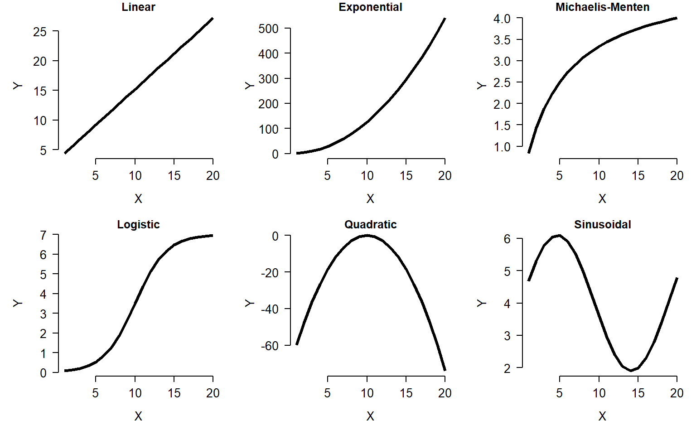
5.1.3 Multiple linear regression
The linear model can easily be extended to include multiple predictors. This can be seen in the matrix notation for linear regression. With a single predictor variable X, the matrix form of the model is:

In this equation, the subscripts on Y, X, and \(\epsilon\)51 refer to observations; the subscripts on \(\beta\) identify the intercept (\(\beta_0\)) or slope (\(\beta_1\)). This matrix notation is shorthand for a system of equations:
\[\begin{matrix}Y_1=1\times\beta_0+\beta_1{\times X}_1+\varepsilon_1\\Y_1=1\times\beta_0+\beta_1{\times X}_2+\varepsilon_2\\\vdots\\Y_n=1\times\beta_0+\beta_1{\times X}_n+\varepsilon_n\\\end{matrix}\]
The matrix shorthand just takes advantage of the rules of matrix multiplication and addition. Multiplying the matrices X and \(\beta\) will result in a matrix with the same number of columns as \(\beta\) and the same number of rows as X. In other words, an n \(\times\) 1 matrix like Y, also called a column vector.
With additional predictors, the design matrix is expanded with additional columns to contain the additional predictors. At the same time, the coefficient matrix \(\beta\) is expanded with the same number of additional rows. The example below shows the matrix form for a regression model with 2 predictors X1 and X2.
\[\left[\begin{matrix}Y_1\\Y_2\\\vdots\\Y_n\\\end{matrix}\right]=\left[\begin{matrix}1&X_{1,1}&X_{2,1}\\1&X_{1,2}&X_{2,2}\\\vdots&\vdots&\vdots\\1&X_{1,n}&X_{2,n}\\\end{matrix}\right]\left[\begin{matrix}\beta_0\\\beta_1\\\beta_2\\\end{matrix}\right]+\left[\begin{matrix}\varepsilon_1\\\varepsilon_2\\\vdots\\\varepsilon_n\\\end{matrix}\right] \]
Fortunately, R takes care of all this matrix algebra for you. The linear model function lm() will automatically define the design and coefficient matrices and estimate the latter. All you need to do is define the model equation using the formula interface as before. Predictor variables go on the right side of the ~, separated by +.
mod2 <- lm(Petal.Length~Sepal.Length+Sepal.Width, data=iris)
summary(mod2)##
## Call:
## lm(formula = Petal.Length ~ Sepal.Length + Sepal.Width, data = iris)
##
## Residuals:
## Min 1Q Median 3Q Max
## -1.25582 -0.46922 -0.05741 0.45530 1.75599
##
## Coefficients:
## Estimate Std. Error t value Pr(>|t|)
## (Intercept) -2.52476 0.56344 -4.481 1.48e-05 ***
## Sepal.Length 1.77559 0.06441 27.569 < 2e-16 ***
## Sepal.Width -1.33862 0.12236 -10.940 < 2e-16 ***
## ---
## Signif. codes: 0 '***' 0.001 '**' 0.01 '*' 0.05 '.' 0.1 ' ' 1
##
## Residual standard error: 0.6465 on 147 degrees of freedom
## Multiple R-squared: 0.8677, Adjusted R-squared: 0.8659
## F-statistic: 482 on 2 and 147 DF, p-value: < 2.2e-16The results show that petal length increases by 1.77 cm for every additional cm of sepal length, and decreases by 1.33 cm for each additional cm of sepal width. The effects of the two predictors are assumed to be orthogonal, or independent of each other.
5.1.4 ANOVA and ANCOVA with lm()
The formula interface is very flexible and can be used to define many kinds of models. If all predictor variables are factors (AKA: grouping or categorical variables), then the result is an analysis of variance model (ANOVA). The ANOVA table can be obtained with function anova(), and post-hoc tests performed on the result of aov(). R uses function lm() to fit ANOVA models because ANOVA is a special case of the linear model.
mod3 <- lm(Petal.Length~Species, data=iris)
summary(mod3)##
## Call:
## lm(formula = Petal.Length ~ Species, data = iris)
##
## Residuals:
## Min 1Q Median 3Q Max
## -1.260 -0.258 0.038 0.240 1.348
##
## Coefficients:
## Estimate Std. Error t value Pr(>|t|)
## (Intercept) 1.46200 0.06086 24.02 <2e-16 ***
## Speciesversicolor 2.79800 0.08607 32.51 <2e-16 ***
## Speciesvirginica 4.09000 0.08607 47.52 <2e-16 ***
## ---
## Signif. codes: 0 '***' 0.001 '**' 0.01 '*' 0.05 '.' 0.1 ' ' 1
##
## Residual standard error: 0.4303 on 147 degrees of freedom
## Multiple R-squared: 0.9414, Adjusted R-squared: 0.9406
## F-statistic: 1180 on 2 and 147 DF, p-value: < 2.2e-16The model summary shows us that at least some of the species have different means. Notice that effects are shown only for two of the three species (versicolor and virginica). The level that is first alphabetically is used as a baseline. So, the effects shown for the other two species are the differences in means between those species and the baseline species. For example, species versicolor has a mean that is 2.798 cm greater than the mean in species setosa.
We can get the omnibus test with anova().
# anova table:
anova(mod3)## Analysis of Variance Table
##
## Response: Petal.Length
## Df Sum Sq Mean Sq F value Pr(>F)
## Species 2 437.10 218.551 1180.2 < 2.2e-16 ***
## Residuals 147 27.22 0.185
## ---
## Signif. codes: 0 '***' 0.001 '**' 0.01 '*' 0.05 '.' 0.1 ' ' 1The ANOVA table shows how the variance is partitioned between that explained by species (expressed as sum of squared errors, Sum Sq) and the residual variation. The F value for each explanatory variable is the ratio of the mean squared error (Mean Sq) for that factor divided by the mean squared error of the residuals. The F value is then used to calculate P-value (Pr(>F)).
# post-hoc test (Tukey):
TukeyHSD(aov(mod3))## Tukey multiple comparisons of means
## 95% family-wise confidence level
##
## Fit: aov(formula = mod3)
##
## $Species
## diff lwr upr p adj
## versicolor-setosa 2.798 2.59422 3.00178 0
## virginica-setosa 4.090 3.88622 4.29378 0
## virginica-versicolor 1.292 1.08822 1.49578 0The Tukey honest significant difference (HSD) test shows which levels of the factors in the ANOVA have means that differ from each other. The diff is literally the difference between the means of the levels in each row. So, the mean of I. versicolor minus the mean of I. setosa is 2.798 cm. Negative numbers would indicate that the level listed first had a smaller mean. The 95% CI of the difference is given, followed by a P-value that is adjusted for multiple comparisons. The P-values shown are not literally 0 (which is not possible). Instead, these should be interpreted as very small. Reporting them as something like “<0.0001” would be appropriate.
Including a continuous predictor with a factor predictor will produce main-effects analysis of covariance (ANCOVA).
mod4 <- lm(Petal.Length~Sepal.Length+Species, data=iris)
summary(mod4)##
## Call:
## lm(formula = Petal.Length ~ Sepal.Length + Species, data = iris)
##
## Residuals:
## Min 1Q Median 3Q Max
## -0.76390 -0.17875 0.00716 0.17461 0.79954
##
## Coefficients:
## Estimate Std. Error t value Pr(>|t|)
## (Intercept) -1.70234 0.23013 -7.397 1.01e-11 ***
## Sepal.Length 0.63211 0.04527 13.962 < 2e-16 ***
## Speciesversicolor 2.21014 0.07047 31.362 < 2e-16 ***
## Speciesvirginica 3.09000 0.09123 33.870 < 2e-16 ***
## ---
## Signif. codes: 0 '***' 0.001 '**' 0.01 '*' 0.05 '.' 0.1 ' ' 1
##
## Residual standard error: 0.2826 on 146 degrees of freedom
## Multiple R-squared: 0.9749, Adjusted R-squared: 0.9744
## F-statistic: 1890 on 3 and 146 DF, p-value: < 2.2e-16The summary table now shows the effects of both the continuous predictor and the factor predictor. As before, the estimated coefficient for a continuous predictor is the change in the response variable for every unit increase in the predictor. The estimates shown for the levels of the factor are the differences between the means of those levels and the baseline level. To fully make sense of this output, we also need to look at the omnibus test and the Tukey test outputs.
anova(mod4)## Analysis of Variance Table
##
## Response: Petal.Length
## Df Sum Sq Mean Sq F value Pr(>F)
## Sepal.Length 1 352.87 352.87 4419.48 < 2.2e-16 ***
## Species 2 99.80 49.90 624.99 < 2.2e-16 ***
## Residuals 146 11.66 0.08
## ---
## Signif. codes: 0 '***' 0.001 '**' 0.01 '*' 0.05 '.' 0.1 ' ' 1TukeyHSD(aov(mod4))## Warning in replications(paste("~", xx), data = mf): non-factors ignored:
## Sepal.Length## Warning in TukeyHSD.aov(aov(mod4)): 'which' specified some non-factors which
## will be dropped## Tukey multiple comparisons of means
## 95% family-wise confidence level
##
## Fit: aov(formula = mod4)
##
## $Species
## diff lwr upr p adj
## versicolor-setosa 1.0696573 0.93584210 1.2034726 0.0000000
## virginica-setosa 1.1499590 1.01614380 1.2837743 0.0000000
## virginica-versicolor 0.0803017 -0.05351353 0.2141169 0.3327997The omnibus test and Tukey test above demonstrate the effects of the continuous predictor and the factor are orthogonal: no sums of squared errors are shared between the variables. Another way of putting that is that the response to one predictor does not depend on any other predictor.
When the effect of one predictor alters the effect of another predictor, the two predictors are said to “interact”. Interactions between predictors can be specified in R in two ways: * or :. Most of the time you should use *, which automatically fits both predictors by themselves (“main effects”) and the interaction between them (“interaction term”). The model produced this way is also called an “interaction effects ANCOVA” or “ANCOVA with interaction”.
f1 <- formula("Petal.Length~Sepal.Length*Species")
mod5 <- lm(f1, data=iris)
summary(mod5)##
## Call:
## lm(formula = f1, data = iris)
##
## Residuals:
## Min 1Q Median 3Q Max
## -0.68611 -0.13442 -0.00856 0.15966 0.79607
##
## Coefficients:
## Estimate Std. Error t value Pr(>|t|)
## (Intercept) 0.8031 0.5310 1.512 0.133
## Sepal.Length 0.1316 0.1058 1.244 0.216
## Speciesversicolor -0.6179 0.6837 -0.904 0.368
## Speciesvirginica -0.1926 0.6578 -0.293 0.770
## Sepal.Length:Speciesversicolor 0.5548 0.1281 4.330 2.78e-05 ***
## Sepal.Length:Speciesvirginica 0.6184 0.1210 5.111 1.00e-06 ***
## ---
## Signif. codes: 0 '***' 0.001 '**' 0.01 '*' 0.05 '.' 0.1 ' ' 1
##
## Residual standard error: 0.2611 on 144 degrees of freedom
## Multiple R-squared: 0.9789, Adjusted R-squared: 0.9781
## F-statistic: 1333 on 5 and 144 DF, p-value: < 2.2e-16The coefficients for the interaction term are Sepal.Length:Speciesversicolor and Sepal.Length:Speciesvirginica. These should be interpreted as “the change in the effect of sepal length when species is versicolor instead of setosa” and “the change in the effect of sepal length when species is virginica instead of setosa”.
The ANOVA table shows us that the effects of sepal length and species are NOT orthogonal, because some of the sums of squares (1.84) are associated with both variables.
anova(mod5)## Analysis of Variance Table
##
## Response: Petal.Length
## Df Sum Sq Mean Sq F value Pr(>F)
## Sepal.Length 1 352.87 352.87 5175.537 < 2.2e-16 ***
## Species 2 99.80 49.90 731.905 < 2.2e-16 ***
## Sepal.Length:Species 2 1.84 0.92 13.489 4.272e-06 ***
## Residuals 144 9.82 0.07
## ---
## Signif. codes: 0 '***' 0.001 '**' 0.01 '*' 0.05 '.' 0.1 ' ' 15.1.5 Variations on linear models
Models without Y-intercepts can be fit by including 0+ in the formula. Sometimes fitting a model without an intercept can be appropriate if there is a natural reason why the response variable must be 0 when the predictor variable is 0. In such a case, any \(\beta_0\) fit by the model would likely be non-significant or meaningless anyway.
# simulate some random data
set.seed(123)
n <- 20
x <- runif(n, 0, 20)
y <- 2.3 * x + rnorm(n, 0, 3)
# full model with intercept and slope:
mod7a <- lm(y~x)
summary(mod7a)##
## Call:
## lm(formula = y ~ x)
##
## Residuals:
## Min 1Q Median 3Q Max
## -4.2284 -1.8960 -0.2605 2.0599 5.6778
##
## Coefficients:
## Estimate Std. Error t value Pr(>|t|)
## (Intercept) 1.8488 1.3149 1.406 0.177
## x 2.1028 0.1044 20.146 8.5e-14 ***
## ---
## Signif. codes: 0 '***' 0.001 '**' 0.01 '*' 0.05 '.' 0.1 ' ' 1
##
## Residual standard error: 2.852 on 18 degrees of freedom
## Multiple R-squared: 0.9575, Adjusted R-squared: 0.9552
## F-statistic: 405.8 on 1 and 18 DF, p-value: 8.498e-14# model with slope only (i.e., no intercept)
mod7b <- lm(y~0+x)
summary(mod7b)##
## Call:
## lm(formula = y ~ 0 + x)
##
## Residuals:
## Min 1Q Median 3Q Max
## -4.6702 -1.7713 0.2444 2.3790 5.4235
##
## Coefficients:
## Estimate Std. Error t value Pr(>|t|)
## x 2.23111 0.05192 42.98 <2e-16 ***
## ---
## Signif. codes: 0 '***' 0.001 '**' 0.01 '*' 0.05 '.' 0.1 ' ' 1
##
## Residual standard error: 2.925 on 19 degrees of freedom
## Multiple R-squared: 0.9898, Adjusted R-squared: 0.9893
## F-statistic: 1847 on 1 and 19 DF, p-value: < 2.2e-16You can also fit a model with only a constant as the predictor using 1 as the right-hand side of the model formula (numeral 1, not lower-case letter L). This is also called an intercept-only model, a model of the mean, or sometimes a null model. A null model with no predictors can be a useful baseline against which to measure other models.
mod8 <- lm(Petal.Width~1,data=iris)
summary(mod8)##
## Call:
## lm(formula = Petal.Width ~ 1, data = iris)
##
## Residuals:
## Min 1Q Median 3Q Max
## -1.0993 -0.8993 0.1007 0.6007 1.3007
##
## Coefficients:
## Estimate Std. Error t value Pr(>|t|)
## (Intercept) 1.19933 0.06224 19.27 <2e-16 ***
## ---
## Signif. codes: 0 '***' 0.001 '**' 0.01 '*' 0.05 '.' 0.1 ' ' 1
##
## Residual standard error: 0.7622 on 149 degrees of freedomThe last regression flavor that we’ll cover is regression on ranks. This uses ranks of the variables rather than their actual values. A variable can be converted to ranks with function rank(). As with any other transformation, it might be better to transform the data in place and call the transformed data inside lm().
mod10 <- lm(rank(Petal.Width)~rank(Petal.Length), data=iris)
summary(mod10)##
## Call:
## lm(formula = rank(Petal.Width) ~ rank(Petal.Length), data = iris)
##
## Residuals:
## Min 1Q Median 3Q Max
## -42.506 -10.385 0.338 10.184 35.939
##
## Coefficients:
## Estimate Std. Error t value Pr(>|t|)
## (Intercept) 4.97766 2.47618 2.01 0.0462 *
## rank(Petal.Length) 0.93407 0.02846 32.82 <2e-16 ***
## ---
## Signif. codes: 0 '***' 0.001 '**' 0.01 '*' 0.05 '.' 0.1 ' ' 1
##
## Residual standard error: 15.08 on 148 degrees of freedom
## Multiple R-squared: 0.8792, Adjusted R-squared: 0.8784
## F-statistic: 1077 on 1 and 148 DF, p-value: < 2.2e-16# better: transform in place:
iris2 <- iris
iris2$pw.rank <- rank(iris2$Petal.Width)
iris2$pl.rank <- rank(iris2$Petal.Length)
mod10 <- lm(pw.rank~pl.rank, data=iris2)
summary(mod10)##
## Call:
## lm(formula = pw.rank ~ pl.rank, data = iris2)
##
## Residuals:
## Min 1Q Median 3Q Max
## -42.506 -10.385 0.338 10.184 35.939
##
## Coefficients:
## Estimate Std. Error t value Pr(>|t|)
## (Intercept) 4.97766 2.47618 2.01 0.0462 *
## pl.rank 0.93407 0.02846 32.82 <2e-16 ***
## ---
## Signif. codes: 0 '***' 0.001 '**' 0.01 '*' 0.05 '.' 0.1 ' ' 1
##
## Residual standard error: 15.08 on 148 degrees of freedom
## Multiple R-squared: 0.8792, Adjusted R-squared: 0.8784
## F-statistic: 1077 on 1 and 148 DF, p-value: < 2.2e-165.1.6 Example linear regression workflow
The following example shows a typical linear regression workflow. This example uses simulated data. So, the first few commands that simulate the dataset are not part of a usual regression analysis. After the data are generated, we will fit a linear model, examine the outputs, and then plot the results.
# simulate the data
set.seed(42)
n <- 30
x <- sample(1:50, n, replace=TRUE)
beta0 <- 30
beta1 <- 1.3
sigma <- 10
y <- rnorm(n, beta0 + beta1 * x, sigma)
dat <- data.frame(x=x, y=y)
# fit the model (analysis workflow starts here!)
mod <- lm(y~x, data=dat)
# examine the results
summary(mod)##
## Call:
## lm(formula = y ~ x, data = dat)
##
## Residuals:
## Min 1Q Median 3Q Max
## -25.033 -7.130 2.620 6.855 18.035
##
## Coefficients:
## Estimate Std. Error t value Pr(>|t|)
## (Intercept) 18.2851 4.6818 3.906 0.000541 ***
## x 1.5752 0.1416 11.128 8.64e-12 ***
## ---
## Signif. codes: 0 '***' 0.001 '**' 0.01 '*' 0.05 '.' 0.1 ' ' 1
##
## Residual standard error: 11.12 on 28 degrees of freedom
## Multiple R-squared: 0.8156, Adjusted R-squared: 0.809
## F-statistic: 123.8 on 1 and 28 DF, p-value: 8.638e-12The output of summary() tells us a lot:
- Call: the model that was fit Residuals: range (min, max) and 1st, 2nd, and 3rd quartiles of the distribution of residuals
- Coefficients: the estimated intercept and slope. Note that the slope associated with each predictor is named for that predictor, exactly as it was named in the function call.
- R-squared: the coefficient of determination, or proportion of variance in Y explained by X. Use the adjusted R2, which penalizes models for the number of predictors and gives a more conservative estimate of the model goodness-of-fit.
- Omnibus ANOVA test: the last line of the output tells us a bit about the ANOVA test for overall model significance. You can get the full test with
anova(mod).
The “coefficients” section of the output is very important. You can access it directly as a matrix:
summary(mod)$coefficients## Estimate Std. Error t value Pr(>|t|)
## (Intercept) 18.28512 4.6817629 3.905606 5.409231e-04
## x 1.57522 0.1415513 11.128259 8.637921e-12This table is really a matrix that contains the estimated values of each regression parameter, the standard error (SE) of each estimate, the test statistic t, and the P-value for each parameter. In standard linear regression, the test statistic t is calculated as:
\[t=\frac{\hat{\beta}}{se\left(\hat{\beta}\right)}\]
and the P-value is calculated by assuming that t follows a t distribution with \(n-2\) degrees of freedom. Note that a P-value is calculated for both the model slope and intercept. Often a model intercept will have P \(\ge\) 0.05. This does not mean that the regression model is invalid or non-significant. This simply means that the data do not support a model intercept significantly different from 0. This is not necessarily a problem: can you think of a biological scenario where an intercept = 0 makes sense?
Before moving on, we should examine some of the diagnostic plots that describe our model. These are produced by plotting our model object. This will produce several plots that you can cycle through by clicking on the plot window. The first two are probably the most important.
plot(mod)


The first plot shows model residuals vs the fitted values (i.e., the values predicted by the deterministic part of the model). This plot should show no obvious pattern. A pattern, such as residuals increasing or decreasing with predicted value, suggests that the residuals are not normal or i.i.d. Such a pattern is called heteroscedasticity. The plot below shows homoscedasticity, a much better situation. If a plot of residuals vs. fitted has a pattern, you need to investigate where that pattern might be coming from and how it can be eliminated. Potential solutions include adding additional predictors, transforming one or more predictor variables, transforming the response variable, or using a different statistical method (e.g., GLM) that can account for the various sources of heteroscedasticity.
The second plot is called a “quantile-quantile” plot, or “QQ plot” for short. This figure shows standardized residuals (see Module 4) on the y-axis vs. the standard scores of those quantiles in a reference distribution (in this case, a normal distribution with mean 0 and variance equal to the variance of the residuals). The points should fall on or near the diagonal line. Significant departures, particularly near the center of the distribution, suggest that the residuals are not normally distributed. If that is the case, then either the data need to be transformed to achieve normality in the residuals, or another statistical method needs to be explored.
Now that we have a fitted regression model, we might want to present it in a publication. The usual way is to have (1) a table showing the model coefficients; (2) text describing the model in the Results section, including the R2; and (3) a figure showing the data and fitted model.
The table should resemble the output of summary(mod)$coefficients. Note that estimates are rounded to a reasonable number of decimal places. Test statistics and P values can have a couple more digits. If you can, align the numbers on the decimal point, so it is easier to compare numbers up and down a column.
| Estimate \(\pm\) SE | t | P | |
|---|---|---|---|
| Intercept (\(\beta_0\)) | 18.3 \(\pm\) 4.7 | 3.906 | 0.0005 |
| Slope (\(\beta_1\)) | 1.6 \(\pm\) 0.1 | 11.128 | <0.0001 |
In order to plot the data and the relationship, we need to put together a few pieces. Namely, the predicted values (so we can add a “trendline”, as it’s called in Excel) and the 95% CI of the predicted values (so we can show how uncertain the predictions are). R makes both of these tasks straightforward, although not as easy as simply clicking “Add Trendline…” in Excel!
In this example, px is a sequence of new values within the domain of the observed X values—do not generate predictions outside your dataset! We are going to use a sequence of new values so that we can smoothly cover the interval between the minimum and maximum of X. This will make for a nicer looking plot.
These values are then supplied to the predict() function (which internally calls another function, predict.lm()) in a data frame. Note that the names in the new data frame must match the names in original data exactly, and any variable in the model must be in the data frame used for prediction, whether or not a variable was significant. The final argument, se.fit=TRUE, specifies that we want the SE of the expected value in addition to the expected value.
# new data for prediction
px <- seq(min(x), max(x), length=50)
# prediction with expected mean and SE of Y
pred <- predict(mod, newdata=data.frame(x=px), se.fit=TRUE)Next, we use the fit and se.fit from the result to define normal distributions at each X value. This way we can calculate what the expected mean and upper and lower confidence limits of the prediction are. You could subtract and add 1.96 SE from/to the mean, but the qnorm() method is much cleaner (and, much more adaptable to situations where other distributions apply).
# predicted mean and 95% CI
y.mn <- pred$fit
y.lo <- qnorm(0.025, pred$fit, pred$se.fit)
y.up <- qnorm(0.975, pred$fit, pred$se.fit)Now we are ready to make the plot. The code below sets some graphical options with par(), then makes the plot one piece at a time. The par() statement is not necessary if you are making graphs for yourself. However, if you are making graphs for your thesis or for a publication, it is essential to producing a clean, professional-quality figure.
In my workflow I prefer to first make a blank plot, then add the CI and prediction, then the original data. This ensures that the data are not plotted over by one of the other pieces. Note that the y-axis limits are set so that 0 is included.
par(mfrow=c(1,1), mar=c(5.1, 5.1, 1.1, 1.1),
bty="n", lend=1,
las=1, cex.axis=1.2, cex.lab=1.2)
plot(dat$x, dat$y, type="n", ylim=c(0, 120),
xlab="X", ylab="Y")
points(px, y.lo, type="l", lwd=2, lty=2)
points(px, y.up, type="l", lwd=2, lty=2)
points(px, y.mn, type="l", lwd=2)
points(dat$x, dat$y, pch=16, cex=1.2)
Here is an alternative version of the figure, using polygon() to plot the confidence interval. Notice how the vertices for the polygon are specified. Half of the values are reversed with rev(), because the polygon() function basically draws the polygon vertex by vertex in a “circle”.
par(mfrow=c(1,1), mar=c(5.1, 5.1, 1.1, 1.1),
bty="n", lend=1, las=1, cex.axis=1.2, cex.lab=1.2)
plot(dat$x, dat$y, type="n",
ylim=c(0, 120),
xlab="X", ylab="Y")
polygon(x=c(px, rev(px)),
y=c(y.lo, rev(y.up)),
border=NA, col="grey80")
points(px, y.mn, type="l", lwd=2)
points(dat$x, dat$y, pch=16, cex=1.2)
There is one other consideration here: do we want to show the model’s predictions and 95% CI of the expected values, or 95% CI of all values? The default is to show the 95% confidence interval, which is a statement about where we expect the mean or expected value to fall. The figures above show 95% CI. The alternative is the 95% prediction interval (PI), sometimes called the tolerance interval. The PI describes the region where 95% of all values might fall, not just the mean. The PI is always wider than the CI. Most of the time showing the CI is appropriate…just be clear in your write-up what you are showing!
The figure below shows the difference between the CI and PI. Note that the output of predict() is different when using the argument interval="prediction", so the code is a little different (we don’t have to use qnorm() to get the limits).
pred2 <- predict(mod, newdata=data.frame(x=px),
se.fit=TRUE,
interval="prediction")
y.lo2 <- pred2$fit[,"lwr"]
y.up2 <- pred2$fit[,"upr"]
par(mfrow=c(1,2), mar=c(5.1, 5.1, 1.1, 1.1), bty="n",
lend=1, las=1, cex.axis=1.2, cex.lab=1.2)
# plot 1: CI
plot(dat$x, dat$y, type="n", ylim=c(0, 120),
xlab="X", ylab="Y",
main="Confidence interval")
polygon(x=c(px, rev(px)),
y=c(y.lo, rev(y.up)),
border=NA, col="grey80")
points(px, y.mn, type="l", lwd=2)
points(dat$x, dat$y, pch=16, cex=1.2)
# plot 2: PI
plot(dat$x, dat$y, type="n", ylim=c(0, 120),
xlab="X", ylab="Y",
main="Prediction interval")
polygon(x=c(px, rev(px)),
y=c(y.lo2, rev(y.up2)),
border=NA, col="grey80")
points(px, y.mn, type="l", lwd=2)
points(dat$x, dat$y, pch=16, cex=1.2)
5.2 GLM basics
In the previous section we explored linear regression and other cases of the the linear model. Linear models are appropriate when there is a linear relationship between a response variable and its predictors, when the predictor variables model the response variable on its original scale, and when the residuals of the model follow a normal distribution. However, the latter two conditions do not always apply in biology.
The generalized linear model (GLM) is a framework that generalizes the linear model by relaxing two of the conditions in which linear models are used. In a GLM:
- The response variable can be modeled on a different scale than its original scale. The original scale of the data is related to the scale of the linear prediction by a link function.
- The values of the response variable can come from many different distributions, not just the normal distribution.
The GLM was introduced by Nelder and Wedderburn (1972) and has since become a vital tool in many fields of study. Methods for fitting GLMs have been improved and expanded since the original publication, such that GLMs can be fit under many inference paradigms including least-squares, Bayesian, and machine learning frameworks.
The basic form of the GLM is shown below:

This form is a little abstract, but it shows the three basic parts of a GLM:
- Linear predictor X\(\beta\), which relates the expected value of Y to a linear function of the predictors X with parameters \(\beta\).
- Link function g, which relates the original values of Y to the values of the linear predictor.
- Probability distribution \(Var(Y|X)\), which describes variability about the expected value.
Below are some more concrete examples of GLMs that show the relationships between the parts. Notice how each of these examples describes a system in terms of its true, unobserved “state” and relates that state to the space of observed observations. The former part is sometimes also called the “deterministic” part of the model, while the latter is called the “stochastic” part. This framework is referred to as the “state-space” representation of a model. Thinking about your study system in state-space terms is the key to understanding GLM. This framework is useful because it allows us to think about and treat separately the deterministic part (state) and the stochastic part (space) of a statistical model.
Being able to think about and deconstruct a dataset in the language of GLMs is one the main points of this course. The GLM is a very useful tool to have in your toolkit as a biologist.

5.2.1 Example GLMS
5.2.1.1 Linear regression as a GLM
\[Y~Normal\left(\mu,\sigma^2\right)\] \[\mu=\eta\] \[\eta=\beta_0+\beta_1X\]
These equations show that linear regression can be thought of as a special case of GLM. The linear predictor \(\eta\) (“eta”) is a linear function of the predictor variable (or variables). The expected value of Y, \(\mu\), is equal to \(\eta\). The variability in the response, \(\sigma^2\), is constant and does not depend on the \(\mu\) (this is not the case for every GLM). Linear regression is a special case of GLM: the case with an identity link function (\(\mu=\eta\)) and a normal distribution for response variables.
5.2.1.2 GLMs for count data
\[Y~Poisson\left(\lambda\right)\] \[\lambda=e^\eta\] \[\eta=\beta_0+\beta_1X\]
The model above is a GLM used to model count data. Counts are often modeled as following a Poisson distribution. The Poisson distribution has one parameter, \(\lambda\) (“lambda”), which is both the expected count and the variance of counts. This means that the residual variation does depend somewhat on the expected value (unlike linear regression). Because counts must be non-negative, the log link function is used. In other words, \(\log{\lambda} = \eta\). GLMs with well-known link functions are usually written without the intermediate \(\eta\) variable:
\[Y~Poisson\left(\lambda\right)\] \[\log{\left(\lambda\right)}=\beta_0+\beta_1X\]
5.2.1.3 Logistic regression: GLM for binary data
\[Y_i~Bernoulli\left(p_i\right)\] \[p_i=\frac{e^{\eta_i}}{1+e^{\eta_i}}\] \[\eta_i=\beta_0+\beta_1X_i\]
The logistic regression model is really a GLM with a logit link function and a binomial error distribution. The Y value for each observation i is either 0 or 1, with P(1) = pi. The link function is the logit function, which means that the linear part of the model predicts the logit of pi. The model can also be written as:
\[Y_i~Bernoulli\left(p_i\right)\] \[logit\left(p_i\right)=\beta_0+\beta_1X_i\]
5.2.2 GLM families
The family of a GLM refers to the distribution that observations follow. GLMs use distributions from the exponential family of distributions. The exponential family is a class of distributions whose PDF or PMF can be written in a particular form that includes the exponential function \(e^x\) or \(exp(x)\). The exponential family includes many well-known distributions such as the normal, exponential52, gamma, beta, Poisson, and many others. Two other common distributions, the binomial and negative binomial, can be included in the exponential family under certain conditions. Which family to use in your GLM analysis depends on what kind of data you are trying to model. It turns out that certain kinds of data tend to follow certain distributions. For example, counts often follow a Poisson distribution. The figure below shows the typical use cases of some common distributions:

In addition to a priori ideas about the nature of a response variable, we also need to consider how the data are distributed in reality. The most common reason that data do not conform to their expected distribution is probably overdispersion. This means that the data have a greater variance than expected. How to deal with overdispersion depends on the expected response distribution.
For normally distributed data, overdispersion is usually not a problem. Note that the term for residual variation \(\sigma^2\) is independent of the expected value \(\mu\). This means that a dataset with a large variance isn’t necessarily overdispersed. However, large skewness (another kind of apparent overdispersion) in the response variable may indicate that a log-normal or gamma distribution is more appropriate than a normal distribution.
For Poisson-distributed data (counts), overdispersion can be an issue. This is because part of the definition of the Poisson distribution is that the mean and variance are the same parameter (i.e., \(\lambda=\mu=\sigma^2\)). In real datasets, the variance is often larger than the mean…sometimes much larger! If this is the case, then it might make sense to fit a GLM with a quasi-Poisson or a negative binomial family instead of a Poisson family. Both of these options include an extra parameter to account for overdispersion.
Another form of overdispersion in count data that makes them not conform to the Poisson distribution is zero-inflation. This is a situation where a response variable has many more 0 values than would be expected based on the Poisson distribution. Mild to moderate zero inflation can be modeled by the negative binomial. Severe zero-inflation might require using zero-inflated models, an extension of GLM53.
5.2.3 GLM link functions
Unlike the family component, choosing a link function for your GLM is relatively straightforward. Most families have canonical link functions that should be used unless you have a very good reason not to. What makes these link functions “canonical” is that they are derived from the PDF or PMF of the response distributions in such a way as to relate an expected value or central tendency of the distribution to a linear function of the predictor variables. In addition to relating different parts of a GLM, link functions are kind of like transformations54. This means that using a link function can help put your data on a scale that is more amenable to analysis. However, there is a key difference between using a link function and using a transformation: with a link function, variance is estimated on the response scale, while with a transformation, variance is estimated on the transformed scale. This can have huge consequences depending on the data and the link/transformation function.
The table below shows the link functions and inverse link functions of some common distributions. The link functions are presented as the relationship between the linear predictor \(\textbf{X}\beta\), the expected value on the link scale \(\eta\), and the expected value on the response scale \(\mu\).
| Distribution | Link name | Link function | Inverse link |
|---|---|---|---|
| Normal | Identity | \(X\beta=\mu\) | \(\mu=X\beta\) |
| Poisson | Log | \(X\beta=\log{\left(\mu\right)}\) | \(\mu=e^{X\beta}\) |
| Binomial | Logit | \(X\beta=\log{\left(\frac{\mu}{1-\mu}\right)}\) | \(\mu=\frac{e^{X\beta}}{1+e^{X\beta}}=\frac{1}{1+e^{-X\beta}}\) |
| Exponential and gamma | Inverse55 | \(X\beta=\mu^{-1}=\frac{1}{\mu}\) | \(\mu=\left(X\beta\right)^{-1}=\frac{1}{X\beta}\) |
It is important to remember that GLMs are linear on the link scale, not necessarily on the scale in which the data are recorded. When raw response variables are plotted against predictor variables, the plot may not be linear. The plot below shows how a relationship can appear linear on the link (i.e., transformed) scale (left), but nonlinear on the original scale (right).
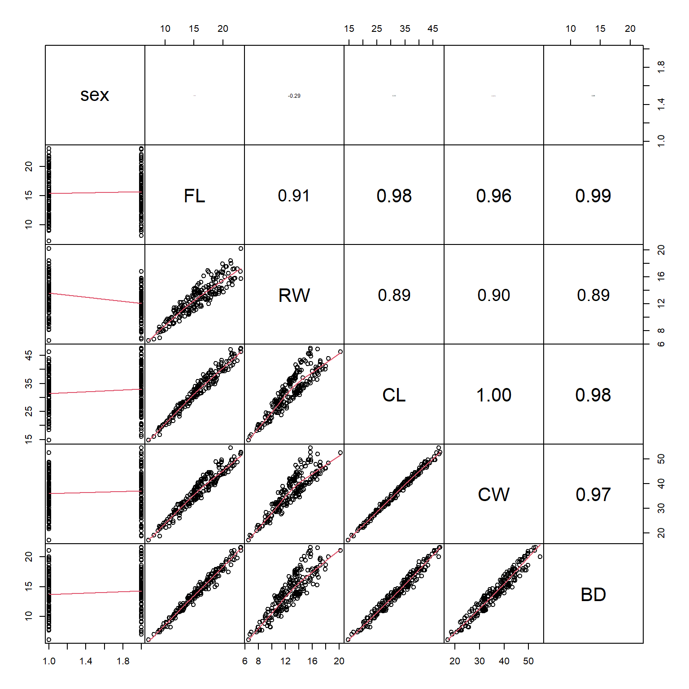
5.2.4 Deviance and other GLM diagnostics
One aspect of GLMs that confuses some people is how to measure how well the model fits the data. That is, how to calculate an R2 value. In linear regression (and other linear models such as ANOVA), the coefficient of determination R2 expresses the proportion of variation in the response variable that is attributable to variation in the predictor variable(s). R2 is a widely-known and useful metric of model fit. However, R2 is not defined for GLMs. This is because of the way R2 is defined:
\[R^2=1-\frac{{SS}_{res}}{{SS}_{tot}}=1-\frac{\sum_{i=1}^{n}\left(y_i-\mu_i\right)^2}{\sum_{i=1}^{n}\left(y_i-\bar{y}\right)^2} \]
This can be visualized in the figure below. Notice how the minimum possible sum of squared deviations is 0, and R2 is the proportion of how much variation (in terms of sums of squares) is reduced by the model. In other words, the performance of the model falls somewhere between the worst possible value and the best possible value. A key property of this calculation is that both the worst possible value, \({SS}_{null}\), and the best possible value, 0, are easily defined.

This definition assumes a normal distribution of residuals, because the variance of a normal distribution X is
\[Var\left(x\right)=\frac{\sum\left(x_i-\bar{x}\right)^2}{n-1}\]
However, the variance for other distributions is something else. This means that the denominator in R2 (total sum of squared deviations) is often not an appropriate measure of variation. Instead of using R2, we have to use a more generalized way to measure model fit.
Deviance is a quantity that generalizes the concept of sum of squared residuals (\({SS}_{res}\)) to models that were fit using maximum likelihood estimation (MLE) instead of classical least squares estimation. For linear regression and other models fit using least squares estimation (which is basically just a solving some linear algebra problems), calculating \({SS}_{res}\) is straightforward. This is because of the overlap between the definitions of \({SS}_{res}\) and the variance of the normal distribution. However, models fit by MLE work by searching for combinations of values of model terms (the “parameter space”) for combinations that maximize a “likelihood function” . Because residuals are not used in the parameter estimation process, evaluating model fit based on \({SS}_{res}\) doesn’t make sense.
Just like least squares methods partition total sums of squared errors into “total” and “residual” sums of squared errors (\({SS}_{tot}\) and \({SS}_{res}\) in the figure above), other methods partition total deviance into “residual deviance” (\(D_{res}\)) and the deviance explained by the model. However, calculating total deviance is not as straightforward as calculating \({SS}_{tot}\) because there is no natural minimum against which to compare. Recall that in linear models, the minimum sum of squared residuals was 0. In GLM terms, this creates a natural upper bound to the likelihood function. However, for most GLMs the theoretical upper bound cannot be calculated a priori the way it can with linear regression.
Deviance is defined by comparing the likelihood of the data under the fitted model to the likelihood of the data under the saturated model56. A saturated model is one that incorporates all of the information in the dataset by having as many parameters as it does observations57. This model is guaranteed to have the closest possible fit to the data. This means that the saturated model will have the greatest possible likelihood function. Any other model will have a smaller likelihood function. The difference between the likelihood of the saturated model and the likelihood of another model tells us something about how much explanatory power that the fitted model has, relative to a hypothetical model with perfect explanatory power.
Residual deviance (\(D_{res}\)) is calculated as twice the difference between the likelihood of the saturated model (\(L_{sat}\)) and the likelihood of the fitted model (\(L_{fitted}\)). For convenience, we usually work with the log of the likelihood (LL).
\[D_{resid}=2\left({LL}_{sat}-{LL}_{fitted}\right)\]
Null deviance (\(D_{null}\)) is similar, but compares the saturated model to the null model. The null model is a model with no predictor variables, which predicts the same value (usually the mean) for all observations.
\[D_{null}=2\left({LL}_{sat}-{LL}_{null}\right)\]
The relationship between these deviances can be seen in the figure below. The null deviance is the difference in log-likelihood between the model that contains none of the information in the data (the null model) and the model that contains all of it (the saturated model). This makes the null deviance the baseline for the best that a model could possibly be. A well-fitting model should have very little residual deviance, because it performs similarly to the saturated model while having fewer parameters. Even though the log-likelihood scale includes 0, this is only to show that log-likelihood values are almost always negative.

Compare this figure to the one above that illustrates R2. Unlike the log-likelihood, there is a natural minimum of 0 for sums of squares in the best possible model. This is analogous to the log-likelihood of the saturated model. Without considering the saturated model, we can’t calculate null deviance, and thus can’t calculate how much of that deviance is explained by the fitted model.
Why does the formula for deviance includes a factor of 2? That factor is there to make it so that the deviance follows a chi-squared distribution with a number of degrees of freedom equal to the difference in the number of parameters between the models. We’ll explore what that means later when we work through some GLM examples.
5.2.5 To pseudo-R2 or not to pseudo-R2?
One final note about goodness of fit in GLMs: no single measure of goodness of fit is universally agreed upon or appropriate for all situations. The pseudo-R2 presented in subsequent sections is widely used, but some authors disagree about what it represents or measures. Other methods for evaluating GLM goodness of fit include:
- Cross-validation: measures the ability of the model to accurately predict data that were not used fit the model. This is widely used in by machine learning methods, and can be useful when predictive ability is the desired endpoint.
- Receiver operating characteristic (ROC) and area under curve (AUC): measures the predictive accuracy of models used for classification, especially logistic regression. For logistic regression, AUC can be more informative than pseudo-R2.
5.2.6 Common GLMs
This site has worked examples of several GLMs commonly encountered by biologists. The links below will take you to the GLM flavor that you’re interested in. The options are:
| Model | Typical use case | Link |
|---|---|---|
| Log-linear GLM | Models for continuous values with non-normal errors | Click here! |
| Poisson GLM | Models for count data | Click here! |
| Quasi-Poisson and negative binomial GLM | Models for overdispersed count data | Click here! |
| Logistic regression | Models for binary outcomes | Click here! |
| Binomial GLM | Models for proportional data | Click here! |
| Gamma GLM | Models for heteroscedastic and right-skewed data | Click here! |
5.3 Log-linear models
This is one of several sections exploring some common GLM applications. For most of these applications we will work through two examples. First, an analysis of simulated data, and second, an analysis of a real dataset. Simulating a dataset suitable for an analysis is an excellent way to learn about the analysis method, because it helps you see the relationship between the data-generating process and the analysis.
This module explores GLMs with a log link function and Gaussian (normal) family: a log-linear model. Log-linear models are models with a linear relationship between the logarithm of the response variable and the predictor variables. While “log-linear” often describes GLMs with Poisson families, it can mean any GLM with a log link function.
5.3.1 Example with simulated data
This example was designed to illustrate the difference between a log-linear GLM and a linear model on log-transformed data.
# random number seed for reproducibility
set.seed(42)
# sample size
n <- 50
# coefficients and residual SD
beta0 <- 2.5
beta1 <- 0.25
sigma <- 2
# x values
x <- runif(n, 1, 8)
# linear predictor
eta <- beta0 + beta1 * x
# inverse link function
mu <- exp(eta)
# response variable
y <- rnorm(n, mu, sigma)
dat <- data.frame(x=x, y=y)
# plot the data:
plot(x,y)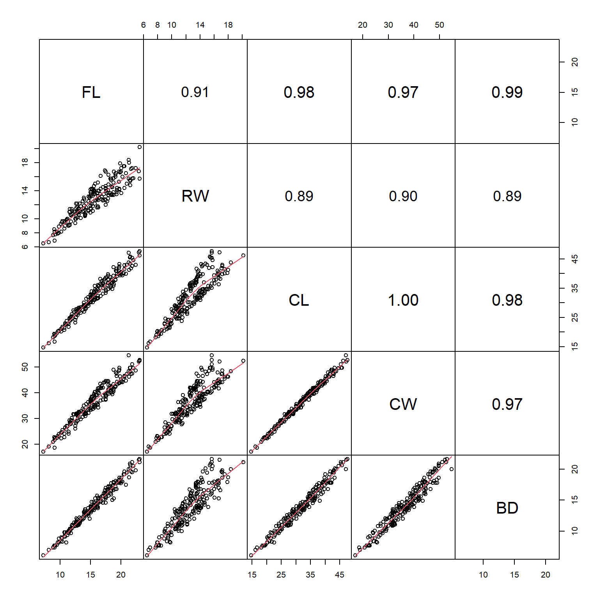
The relationship looks somewhat linear, but we might have some reason to suspect that it is not either because we have a biological reason or because we can see the slight curve characteristic of exponential functions. Let’s try two models: a log-linear GLM, and a LM on log-transformed data.
# model 1: GLM with log link
mod1 <- glm(y~x, data=dat, family=gaussian(link = "log"))
# model 2: LM on log-transformed data
dat$logy <- log(dat$y)
mod2 <- lm(logy~x, data=dat)You may get an error message that illustrates a problem with fitting GLMs that doesn’t come up with linear models: starting values. Recall that linear models are fit by essentially solving linear algebra problems. GLMs are fit using an iterative process. This iterative process needs reasonable starting values in order to have a good chance of finding a good solution. R can figure out good starting values for many GLMs, particularly GLMs that use the canonical link function for the family (see table in previous section). Because the canonical link for the Gaussian family is the identity function, not log, R may need you to provide the starting values. One way to find good starting values is to find a way to linearize the model. In this case, we can simply log-transform the response and use the coefficients as starting values for our GLM.
# not run:
starts <- coef(lm(log(y)~x))
mod1 <- glm(y~x, data=dat, family=gaussian(link="log"),
start=starts)Interestingly, both models estimated model parameters that were pretty close to the true values.
summary(mod1)##
## Call:
## glm(formula = y ~ x, family = gaussian(link = "log"), data = dat,
## start = starts)
##
## Deviance Residuals:
## Min 1Q Median 3Q Max
## -5.7735 -1.1230 0.4361 1.4853 3.1162
##
## Coefficients:
## Estimate Std. Error t value Pr(>|t|)
## (Intercept) 2.478735 0.025559 96.98 <2e-16 ***
## x 0.252960 0.003716 68.07 <2e-16 ***
## ---
## Signif. codes: 0 '***' 0.001 '**' 0.01 '*' 0.05 '.' 0.1 ' ' 1
##
## (Dispersion parameter for gaussian family taken to be 3.806117)
##
## Null deviance: 27488.14 on 49 degrees of freedom
## Residual deviance: 182.69 on 48 degrees of freedom
## AIC: 212.68
##
## Number of Fisher Scoring iterations: 3summary(mod2)##
## Call:
## lm(formula = logy ~ x, data = dat)
##
## Residuals:
## Min 1Q Median 3Q Max
## -0.22312 -0.01971 0.01146 0.02941 0.11028
##
## Coefficients:
## Estimate Std. Error t value Pr(>|t|)
## (Intercept) 2.510009 0.022596 111.08 <2e-16 ***
## x 0.247561 0.004033 61.38 <2e-16 ***
## ---
## Signif. codes: 0 '***' 0.001 '**' 0.01 '*' 0.05 '.' 0.1 ' ' 1
##
## Residual standard error: 0.06001 on 48 degrees of freedom
## Multiple R-squared: 0.9874, Adjusted R-squared: 0.9872
## F-statistic: 3767 on 1 and 48 DF, p-value: < 2.2e-16The R2 for the LM fit is very high, 0.987. We can use the deviance of the fitted model to calculate a pseudo-R2 for the GLM fit. The result, 0.933, is also pretty good!
1-(mod1$deviance/mod1$null.deviance)## [1] 0.9933537As a final check, let’s look at the residuals and other diagnostic plots for our models.
hist(residuals(mod1))
par(mfrow=c(2,2))
plot(mod1)
hist(residuals(mod2))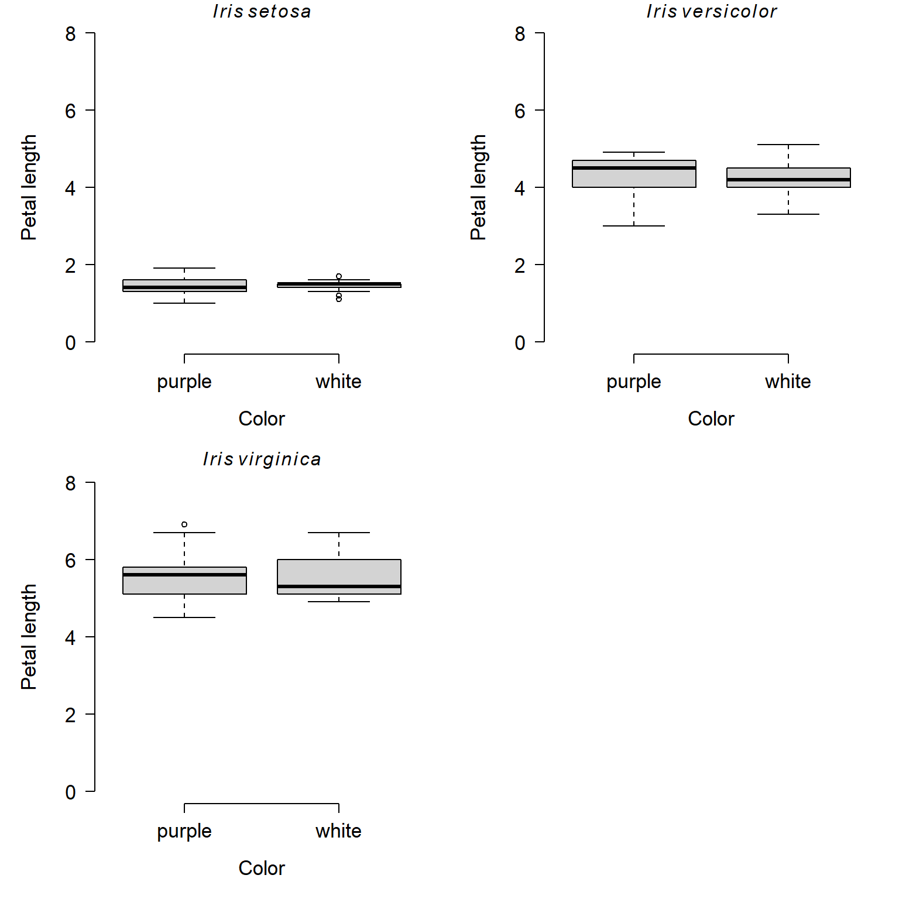
par(mfrow=c(2,2))
plot(mod2)
The plots for the GLM fit look pretty good. There is no evidence of heteroscedasticity, and no evidence of nonnormality in the residuals. The same plots for the LM fit, however, do show some potential problems with heteroscedasticity. In particular, the scale-location plot shows evidence that the size of the residuals varies with the fitted value.
The last step is to plot the data and the predicted values. When plotting predicted values (and their 95% confidence interval) from GLMs, the procedure is similar to that for linear models. However, we need to be careful not to treat variation on the response scale the same as variation on the link scale. R can generate predictions either scale, but the uncertainty it calculates for those predictions may or may not be reasonable for your situation. For this example, both methods below will produce the same predictions; with other families and link functions, that might not be the case.
Notice that the code below looks very similar to that used with the linear model output.
# new data for prediction
px <- seq(min(x), max(x), length=50)
# GLM prediction (mod1)
pred1 <- predict(mod1, newdata=data.frame(x=px),
type="link", se.fit=TRUE)
lo1 <- qnorm(0.025, pred1$fit, pred1$se.fit)
up1 <- qnorm(0.975, pred1$fit, pred1$se.fit)
mn1 <- pred1$fit
# inverse link function
lo1 <- mod1$family$linkinv(lo1)
up1 <- mod1$family$linkinv(up1)
mn1 <- mod1$family$linkinv(mn1)
# LM prediction (mod2)
pred2 <- predict(mod2, newdata=data.frame(x=px),
se.fit=TRUE)
lo2 <- qlnorm(0.025, pred2$fit, pred2$se.fit)
up2 <- qlnorm(0.975, pred2$fit, pred2$se.fit)
# backtransform
mn2 <- exp(pred2$fit)The code below plots the predicted values, 95% CI, and optionally the original data. The commands to plot the original data are commented out to make it easier to see the confidence intervals (which are very narrow).
par(mfrow=c(1,2), mar=c(5.1, 5.1, 1.1, 1.1),
bty="n", lend=1,
las=1, cex.axis=1.2, cex.lab=1.2)
plot(dat$x, dat$y, type="n", ylim=c(0, 100),
xlab="X", ylab="Y",
main="GLM predictions")
points(px, lo1, type="l", lwd=2, lty=2)
points(px, up1, type="l", lwd=2, lty=2)
points(px, mn1, type="l", lwd=2)
#points(dat$x, dat$y, pch=16, cex=0.8)
plot(dat$x, dat$y, type="n", ylim=c(0, 100),
xlab="X", ylab="Y",
main="LM predictions")
points(px, lo2, type="l", lwd=2, lty=2)
points(px, up2, type="l", lwd=2, lty=2)
points(px, mn2, type="l", lwd=2, pch=16, cex=0.8)
#points(dat$x, dat$y, pch=16, cex=0.8) The figure shows that both models predicted the mean quite well. Notice what happens at the far right of each plot: the 95% CI for the LM predictions starts to get wider, while the interval for the GLM predictions does not. In other words, the LM fit is heteroscedastic, while the GLM fit was not. Were the original data heteroscedastic? No. The GLM accurately captured the homoscedastic nature of the data.
5.3.2 Example with real data
Chivers and Hladik (1980) investigated the morphology of the gut in primates and other mammals to see if there was a correlation with diet. They examined digestive tracts from 78 mammal species (50 of them primates) and measured the length, surface area, volume, and weight of different components of each species’ gut. Each species was classified initially into one of three diet classes: - Faunivore: consumes primarily animals (i.e., a carnivore) - Frugivore: consumes primarily fruits, but could also eat a varied diet - Foliovore: consumes primarily leaves and grasses
The variables in this dataset are:
| Variable | Meaning |
|---|---|
| spp | Taxon as genus (if only one member of genus present in dataset) or binomen (if >1 member of genus in dataset) |
| order | Taxonomic order |
| diet | Frugivore, foliovore, or faunivore |
| sex | Sex: f = female, m = male |
| len | Body length (cm) |
| sa_stom | Internal surface area of the stomach (cm2) |
| sa_si | Internal surface area of the small intestine (cm2) |
| sa_caec | Internal surface area of the cecum (cm2) |
| sa_col | Internal surface area of the colon (cm2) |
| vol_stom | Volume of the stomach (cm3) |
| vol_si | Volume of the small intestine (cm3) |
| vol_caec | Volume of the cecum (cm3) |
| vol_col | Volume of the colon (cm3) |
Import the dataset chivers1980data.csv. The code below requires that you put the file in your R working directory.
in.name <- "chivers1980data.csv"
dat <- read.csv(in.name, header=TRUE)For this example, we will analyze the relationship between stomach size and body length. Examine both variables and their relationship to see what we’re dealing with:
par(mfrow=c(1,3))
hist(dat$len)
hist(dat$vol_stom)
plot(dat$len, dat$vol_stom)
The histograms for both variables suggest that they are highly nonnormal and right-skewed. They are also continuous variables. This suggests that log-transforming them would be helpful.
par(mfrow=c(1,3), cex.lab=1.3, cex.axis=1.3)
hist(log(dat$len))
hist(log(dat$vol_stom))
plot(log(dat$len), log(dat$vol_stom))
Log-transforming the variables made it easier to see the relationship between body length and stomach volume. On a log-log scale, the relationship looks linear. At this point we could simply perform linear regression on the log-transformed variables. Instead, we will fit a “log-linear” model using GLM.
Remember that in a GLM the link function is what “transforms” the response variable. So, we only need to transform the predictor variable. We’ll use log10 instead of log so that plotting will be easier later.
dat$len.tr <- log10(dat$len)Next, fit the model using function glm(). We are using the Gaussian (aka: normal) family with a log link function. Notice that the formula and data arguments are the same as for lm().
mod1 <- glm(vol_stom~len.tr, data=dat,
family=gaussian(link="log"))
summary(mod1)##
## Call:
## glm(formula = vol_stom ~ len.tr, family = gaussian(link = "log"),
## data = dat)
##
## Deviance Residuals:
## Min 1Q Median 3Q Max
## -6813.5 -890.5 -528.0 -288.2 15418.2
##
## Coefficients:
## Estimate Std. Error t value Pr(>|t|)
## (Intercept) 1.5356 0.6813 2.254 0.0254 *
## len.tr 3.2709 0.3307 9.892 <2e-16 ***
## ---
## Signif. codes: 0 '***' 0.001 '**' 0.01 '*' 0.05 '.' 0.1 ' ' 1
##
## (Dispersion parameter for gaussian family taken to be 3992734)
##
## Null deviance: 1092527506 on 178 degrees of freedom
## Residual deviance: 706707651 on 177 degrees of freedom
## AIC: 3232.8
##
## Number of Fisher Scoring iterations: 6The coefficients part of the output looks similar to that of a linear model. The bottom part displays information about deviance rather than calculations related to R2. We can use those values to calculate a pseudo-R2.
1-(mod1$deviance/mod1$null.deviance)## [1] 0.3531443That’s not great but not bad either. Let’s plot the data and model predictions to see what might have gone wrong. We’ll use predict() like we do with linear models, but with a few added wrinkles.
# new data for prediction
px <- seq(min(dat$len.tr), max(dat$len.tr), length=50)
# make predictions
pred <- predict(mod1, newdata=data.frame(len.tr=px),
se.fit=TRUE,
type="response")
mn <- pred$fit
lo <- qnorm(0.025, mn, pred$se.fit)
up <- qnorm(0.975, mn, pred$se.fit)
# reset plot layout
par(mfrow=c(1,1))
# make the plot
plot(dat$len.tr, dat$vol_stom, xaxt="n")
axis(side=1, at=log10(c(10, 100, 250)), labels=c(10, 100, 250))
axis(side=1, at=log10(c(1:9*10, 200)), labels=NA, tcl=-0.3)
points(px, lo, type="l")
points(px, up, type="l")
points(px, mn, type="l", lwd=3)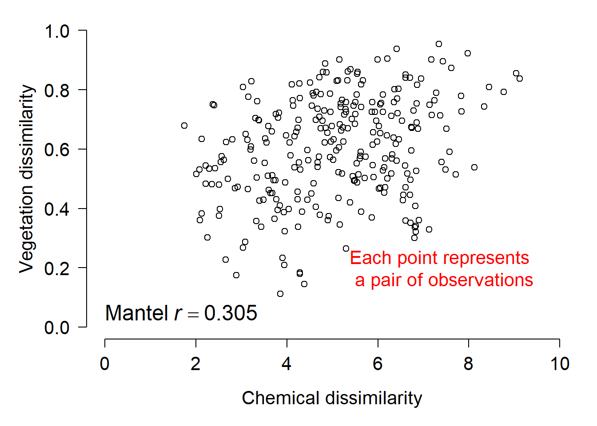
The model does reasonably well below 100 cm length, but there is quite a bit of spread as animals get larger. Let’s superimpose the factor diet on the plot to see if that might help.
cols <- rainbow(3)
diets <- sort(unique(dat$diet))
use.cols <- cols[match(dat$diet, diets)]
plot(dat$len.tr, dat$vol_stom, xaxt="n")
axis(side=1, at=log10(c(10, 100, 250)), labels=c(10, 100, 250))
axis(side=1, at=log10(c(1:9*10, 200)), labels=NA, tcl=-0.3)
points(px, lo, type="l")
points(px, up, type="l")
points(px, mn, type="l", lwd=3)
points(dat$len.tr, dat$vol_stom, pch=16, col=use.cols)
It looks like some of the variation might be driven by diet. To investigate, we’ll refit the model with the factor diet. We will fit two versions of the model with diet: one where the effects of diet and length are separate, and another where the effects of diet and length interact. We’ll then use information theoretic inference to determine which model works best.
mod2 <- glm(vol_stom~len.tr+diet, data=dat,
family=gaussian(link="log"))
mod3 <- glm(vol_stom~len.tr*diet, data=dat,
family=gaussian(link="log"))The pseudo-R2 increased from model 1 to model 2, but not from model 2 to model 3. This suggests that adding the interaction didn’t improve the fit much, but adding the factor diet did.
# check pseudo R squared (heuristic only)
1-(mod2$deviance/mod2$null.deviance)## [1] 0.53427841-(mod3$deviance/mod3$null.deviance)## [1] 0.5359137We can use Akaike’s information criterion (AIC) and AIC weight to compare the models.
aic.df <- AIC(mod1, mod2, mod3)
aic.df$delta <- aic.df$AIC - min(aic.df$AIC)
aic.df$wt <- exp(-0.5*aic.df$delta)
aic.df$wt <- aic.df$wt/sum(aic.df$wt)
aic.df <- aic.df[order(-aic.df$wt),]
aic.df## df AIC delta wt
## mod2 5 3177.957 0.000000 8.435910e-01
## mod3 7 3181.327 3.370387 1.564090e-01
## mod1 3 3232.765 54.807812 1.058685e-12The AIC weights suggest that model 2 is likely to be the best model of these 3 models. So, let’s remake the figure with model predictions using the new model 2. This figure will be a little more complicated, because we need to show predictions within each of 3 levels of diet, while also being careful not to make predictions outside of the domain of length within any diet.
# number of points
n <- 50
# get range of X for each level of diet
agg <- aggregate(len.tr~diet, data=dat, range)
# define a sequence of X values for each diet
px1 <- seq(agg$len.tr[1,1], agg$len.tr[1,2], length=n)
px2 <- seq(agg$len.tr[2,1], agg$len.tr[2,2], length=n)
px3 <- seq(agg$len.tr[3,1], agg$len.tr[3,2], length=n)
# combine together to single data frame
dx <- data.frame(diet=rep(agg$diet, each=n),
len.tr=c(px1, px2, px3))
# calculate predictions and 95% CI
pred <- predict(mod2, newdata=dx,
se.fit=TRUE,
type="response")
mn <- pred$fit
lo <- qnorm(0.025, mn, pred$se.fit)
up <- qnorm(0.975, mn, pred$se.fit)
# put everything in a single data frame for convenience
dx$mn <- mn
dx$lo <- lo
dx$up <- up
# unique diets
diets <- sort(unique(dx$diet))
ndiets <- length(diets)
# define a color palette and add to dat for plotting
# https://colorbrewer2.org/#type=qualitative&scheme=Dark2&n=3
cols <- c("#1b9e77", "#d95f02", "#7570b3")
cols2 <- paste0(cols, "30")
dat$col <- cols[match(dat$diet, diets)]Now we’re ready to make our plot. As before, we’ll assemble the plot piece by piece. The preliminary code above seems like a lot of trouble, but it will allow us to make the plot very efficiently. First we’ll make the plot and add the log X-axis. Then, we’ll use a for() loop to plot the predicted mean and CI for each diet. Using a loop allows us to repeat commands many times, without having to type the commands over and over.
plot(dat$len.tr, dat$vol_stom, type="n",
ylab="Stomach volume (ml)",
xlab="Body length (cm)",
xaxt="n")
axis(side=1, at=log10(c(10, 100, 250)), labels=c(10, 100, 250))
axis(side=1, at=log10(c(1:9*10, 200)), labels=NA, tcl=-0.3)
for(i in 1:ndiets){
flag <- which(dx$diet == diets[i])
polygon(x=c(dx$len.tr[flag], rev(dx$len.tr[flag])),
y=c(dx$lo[flag], rev(dx$up[flag])),
border=NA, col=cols2[i])
points(dx$len.tr[flag], dx$mn[flag],
type="l", lwd=3, col=cols[i])
}#i
points(dat$len.tr, dat$vol_stom, pch=16, col=dat$col, cex=0.8)
legend("topleft", legend=diets, col=cols, pch=16)Here is an alternative version with each diet in its own panel:
# alternative version in 3 panels:
par(mfrow=c(1,3), cex.lab=1.3, cex.axis=1.3)
for(i in 1:ndiets){
flag <- which(dx$diet == diets[i])
plot(dat$len.tr, dat$vol_stom, type="n",
ylab="Stomach volume (ml)",
xlab="Body length (cm)",
xaxt="n")
axis(side=1, at=log10(c(10, 100, 250)),
labels=c(10, 100, 250))
axis(side=1, at=log10(c(1:9*10, 200)),
labels=NA, tcl=-0.3)
polygon(x=c(dx$len.tr[flag], rev(dx$len.tr[flag])),
y=c(dx$lo[flag], rev(dx$up[flag])),
border=NA, col="grey80")
points(dx$len.tr[flag], dx$mn[flag],
type="l", lwd=3)
title(main=diets[i])
flag2 <- which(dat$diet == diets[i])
points(dat$len.tr[flag2], dat$vol_stom[flag2],
pch=16, cex=0.8)
}
5.4 Poisson GLM for counts
This is one of several sections exploring some common GLM applications. For most of these applications we will work through two examples. First, an analysis of simulated data, and second, an analysis of a real dataset. Simulating a dataset suitable for an analysis is an excellent way to learn about the analysis method, because it helps you see the relationship between the data-generating process and the analysis.
This module explores GLMs for count data. Count data are exactly what they sound like: values resulting from counting things. Count data take the form of non-negative integers. Non-negative integers, however, are not necessarily count data. For example, values can be rounded to the nearest integer, but they will not be counts.
Count data are usually well-modeled by a kind of GLM called Poisson regression. The “Poisson” part comes from the Poisson distribution, which describes counts and events that occur at a constant rate. The “regression” part of the name comes from the fact that the technique involves a linear relationship between the predictors and some function of the response.
In the next section we will explore another class of models for count data that do not follow the Poisson distribution. These models, the quasi-Poisson and negative binomial GLMs, have an extra term that accounts for overdispersion.
Poisson regression describes a GLM with a Poisson family and log link function. As with other GLMs, we do not fit an equation for the response values directly. Instead, we fit a linear model for the log of the expected value, and assume that the actual observed counts follow a Poisson distribution. To see what this means in practice, let’s simulate some data that might be modeled by Poisson regression.
5.4.1 Example with simulated data
In this example Poisson GLM workflow we will simulate some data, analyze it, and interpret the results.
# random number seed for reproducibility
set.seed(42)
# sample size
n <- 50
# coefficients
beta0 <- 0.9
beta1 <- 0.2
# x values
x <- runif(n, 0, 10)
# linear predictor
eta <- beta0 + beta1 * x
# inverse link function
lambda <- exp(eta)
# response variable
y <- rpois(n, lambda)
dat <- data.frame(x=x, y=y)
plot(x,y)
The relationship between Y and X looks linear, but because we are clever biologists, we know that linear models are not appropriate for two reasons. First, linear models predict continuous responses, and counts are not continuous (they are discrete). Second, linear models can predict negative responses, and counts cannot be negative. So, we will try Poisson regression because the Poisson distribution is so good at handling counts.
mod1 <- glm(y~x, data=dat, family=poisson)
summary(mod1)##
## Call:
## glm(formula = y ~ x, family = poisson, data = dat)
##
## Deviance Residuals:
## Min 1Q Median 3Q Max
## -2.06284 -0.46194 -0.06797 0.39314 2.18201
##
## Coefficients:
## Estimate Std. Error z value Pr(>|z|)
## (Intercept) 0.9258 0.1447 6.397 1.59e-10 ***
## x 0.2089 0.0183 11.415 < 2e-16 ***
## ---
## Signif. codes: 0 '***' 0.001 '**' 0.01 '*' 0.05 '.' 0.1 ' ' 1
##
## (Dispersion parameter for poisson family taken to be 1)
##
## Null deviance: 194.34 on 49 degrees of freedom
## Residual deviance: 37.16 on 48 degrees of freedom
## AIC: 241.37
##
## Number of Fisher Scoring iterations: 4The estimated parameters are very close to the correct values! The model also explains a lot of the variation in Y, as seen by the pseudo-R2 of > 0.8.
1-mod1$deviance/mod1$null.deviance## [1] 0.8087827The next step is to plot predicted values and the original data. If you have visited any of the other modules in this course, you should be familiar with the process by now. Even if you feel comfortable generating model predictions, there are some wrinkles to be aware of when working with non-normal models. We’re going to present predictions in several ways, to illustrate the relationship between the GLM and the data.
First, let’s present the 95% prediction interval (PI). The PI is an interval in which 95% of values should fall. It is necessarily larger than the 95% confidence interval (CI), which is the interval where the expected value should fall. Both intervals have their uses; just be clear about which one you are using.
Notice that we do not request se.fit=TRUE in the commands below, because it is not needed to get the PI of the Poisson distribution. This is because for the Poisson distribution the expected value, mean, and variance are all the same value (i.e., \(\lambda=\mu=\sigma^2\)).
n <- 50
px <- seq(min(dat$x), max(dat$x), length=n)
pred1 <- predict(mod1,
newdata=data.frame(x=px),
type="response")
mn1 <- pred1
lo1 <- qpois(0.025, mn1)
up1 <- qpois(0.975, mn1)
# make the plot:
plot(x, y, xlab="X", ylab="Y", type="n",
ylim=c(0, 30))
points(px, lo1, type="l", lty=2, lwd=2)
points(px, up1, type="l", lty=2, lwd=2)
points(px, mn1, type="l", lwd=2)
points(x,y)Notice anything odd? The 95% prediction limits increase in discrete steps rather than as smooth curves. This is because we calculated them as quantiles from the Poisson distribution, which can only take on integer values. This means that the PI can only be bounded by integer values. The plotted PI is correct, but looks odd because we are used to seeing smooth curves. It also looks odd because it includes most (if not all) values, which CI do not do.
The second method is a more traditional 95% CI. Unlike the PI, the CI shows the uncertainty associated with the expected value. This means that the relationship between the PI and CI is similar to the relationship between the SD and SE.
pred2 <- predict(mod1,
newdata=data.frame(x=px),
type="response", se.fit=TRUE)
mn2 <- pred2$fit
lo2 <- mn2 - 1.96*pred2$se.fit
up2 <- mn2 + 1.96*pred2$se.fit
plot(x, y, xlab="X", ylab="Y", type="n",
ylim=c(0, 30))
points(px, lo2, type="l", lty=2, lwd=2)
points(px, up2, type="l", lty=2, lwd=2)
points(px, mn2, type="l", lwd=2)
points(x,y)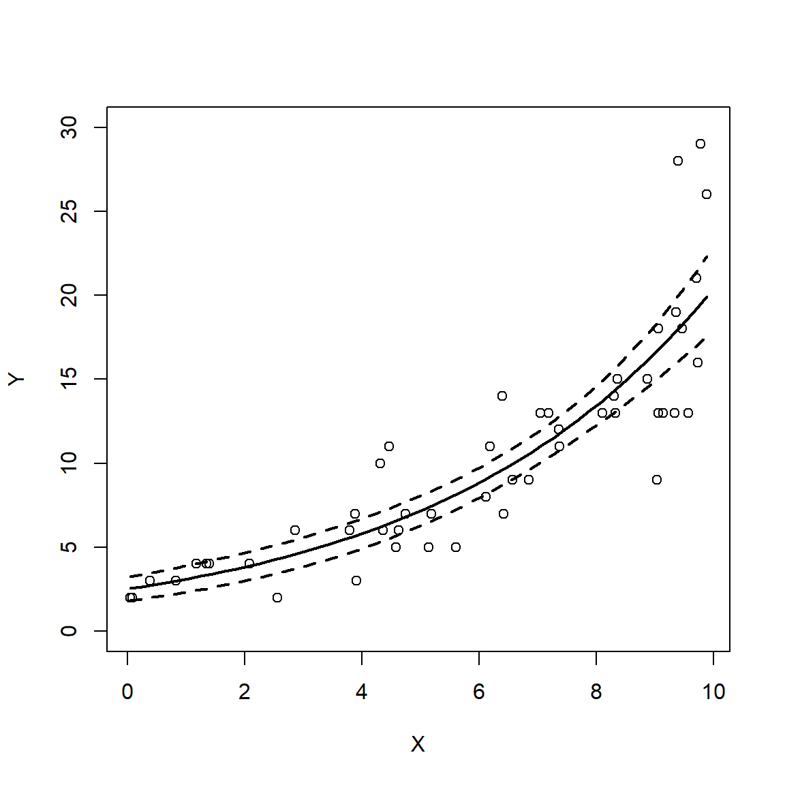
Given that the Poisson distribution is defined by a single parameter that is both the mean and variance, it is worth wondering what the SE estimated by se.fit=TRUE in the command that created pred2 really is (after all, it is separate from the mean!). In a nutshell, it is the SE of the expected value assuming that the expected value follows a normal distribution. This assumption turns out to be appropriate for many situations. Taking advantage of the properties of the normal distribution allowed us to use \(\pm\) 1.96 SE to approximate the 95% CI (verify this with qnorm(c(0.025, 0.975))). Alternatively, we could have used:
# not run:
lo2 <- qnorm(0.025, mn2, pred2$se.fit)
up2 <- qnorm(0.975, mn2, pred2$se.fit)Finally, we could have also generated predictions on the link scale and transformed them to the response scale. This method is often safer than using type="response because the resulting predictions are guaranteed to be inside the domain of the response variable.
# getting CI from link scale
pred3 <- predict(mod1,
newdata=data.frame(x=px),
type="link", se.fit=TRUE)
mn3 <- pred3$fit
lo3 <- mn3 - 1.96*pred3$se.fit
up3 <- mn3 + 1.96*pred3$se.fit
# use inverse link function from model object
mn3 <- mod1$family$linkinv(mn3)
lo3 <- mod1$family$linkinv(lo3)
up3 <- mod1$family$linkinv(up3)
# make plot
plot(x, y, xlab="X", ylab="Y", type="n",
ylim=c(0, 30))
points(px, lo3, type="l", lty=2, lwd=2)
points(px, up3, type="l", lty=2, lwd=2)
points(px, mn3, type="l", lwd=2)
points(x,y)5.4.2 Example with real data
The study of statistical patterns in biodiversity, abundance, and ecological function across large spatial scales is called macroecology. Rather than study individual species and sites, macroecologists integrate data across many studies and databases to search for broadly applicable patterns. Faurby et al. (2018) compiled basic biogeographic, conservation, and life history data for >5800 species of mammals and published them as the database PHYLACINE. We will use the data from PHYLACINE to explore the relationship between mammal species richness and geography in the western hemisphere. The figure below shows the species richness data at 2075 systematically placed points in mainland North America and South America.

The dataset mammal_data_2021-09-08.csv contains mammal species richness at about 2000 locations throughout North and South America. These points were defined by longitude and latitude in a regular grid that covered both continents. The PHYLACINE database was then queried to determine which species’ ranges overlapped each point. The result is a data frame with the species richness of each point related to its geographic coordinates58.
First, download the data and put it in your R home directory. We’ll do some data exploration before jumping into the analysis.
dat <- read.csv("mammal_data_2021-09-08.csv", header=TRUE)
head(dat)## X long lat rich
## 1 1 -72.50909 -52.49019 58
## 2 2 -70.99915 -52.49019 56
## 3 3 -73.26407 -51.18254 55
## 4 4 -71.75412 -51.18254 31
## 5 5 -70.24417 -51.18254 24
## 6 6 -74.01904 -49.87489 43par(mfrow=c(1,3))
hist(dat$rich)
hist(dat$lat)
plot(dat$lat, dat$rich)
At first glance, it looks like mammal species richness peaks near the equator (0 = equator, + = north latitude, and - = south latitude). It also looks like the response to latitude is the same whether going north or south. So, let’s use the absolute value of latitude instead. While we’re at it, let’s try out a log-transform on richness. This makes sense because richness (1) appears highly right-skewed; and (2) must be nonnegative.
# transform:
dat$xlat <- abs(dat$lat)
dat$logrich <- log(dat$rich)
# look again:
par(mfrow=c(1,3))
hist(dat$logrich)
hist(dat$xlat)
plot(dat$xlat, dat$logrich)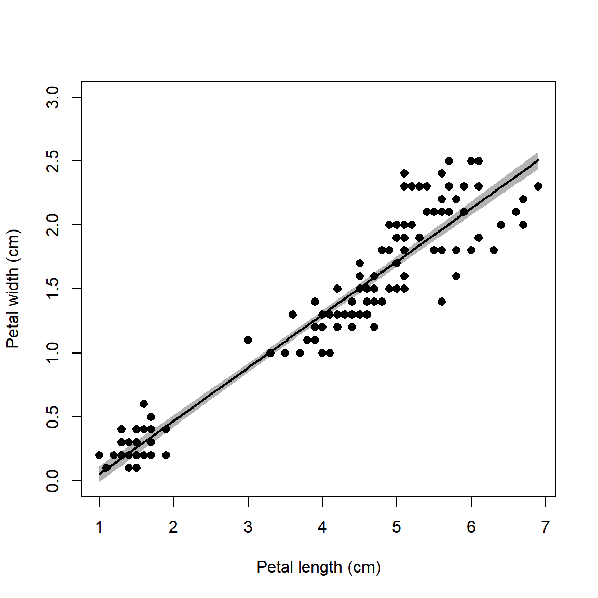
The rightmost plot shows that there is a linear relationship between the log-transformed response variable, which represents counts, and the explanatory variable. This means we should try modeling this relationship with a GLM, with a Poisson family and log link function. The Poisson distribution is because the data are counts. The log link is used because it is the canonical link function for the Poisson family.
mod1 <- glm(rich~xlat, data=dat, family=poisson)
# check model terms:
summary(mod1)##
## Call:
## glm(formula = rich ~ xlat, family = poisson, data = dat)
##
## Deviance Residuals:
## Min 1Q Median 3Q Max
## -11.2645 -1.4664 0.0785 1.4371 8.4076
##
## Coefficients:
## Estimate Std. Error z value Pr(>|z|)
## (Intercept) 5.2859143 0.0038991 1355.7 <2e-16 ***
## xlat -0.0282742 0.0001219 -231.9 <2e-16 ***
## ---
## Signif. codes: 0 '***' 0.001 '**' 0.01 '*' 0.05 '.' 0.1 ' ' 1
##
## (Dispersion parameter for poisson family taken to be 1)
##
## Null deviance: 69333 on 2074 degrees of freedom
## Residual deviance: 11653 on 2073 degrees of freedom
## AIC: 24186
##
## Number of Fisher Scoring iterations: 4# pseudo R squared:
1-mod1$deviance/mod1$null.deviance## [1] 0.8319267As before, we want to present the data with the predictions of the model, and the 95% CI of the predictions. As before, we’ll explore different ways of calculating and presenting uncertainty about the predictions. First, we’ll use the Poisson distribution to get the 95% prediction interval (the interval where 95% of values should fall). Then, we’ll use the normal approximation to get the 95% confidence interval of \(\lambda\) (i.e., the interval where we are 95% certain that the true \(\lambda\) falls).
n <- 100
px <- seq(min(dat$xlat), max(dat$xlat), length=n)
dx <- data.frame(xlat=px)
pred1 <- predict(mod1,
newdata=data.frame(dx),
type="response", se.fit=TRUE)
mn1 <- pred1$fit
# Poisson prediction interval:
lo1 <- qpois(0.025, mn1)
up1 <- qpois(0.975, mn1)
# normal approximation confidence interval:
pred2 <- predict(mod1,
newdata=data.frame(dx),
type="link", se.fit=TRUE)
mn2 <- pred2$fit
lo2 <- qnorm(0.025, mn2, pred2$se.fit)
up2 <- qnorm(0.975, mn2, pred2$se.fit)
# inverse link function
mn2 <- mod1$family$linkinv(mn2)
lo2 <- mod1$family$linkinv(lo2)
up2 <- mod1$family$linkinv(up2)
par(mfrow=c(1,2), cex.lab=1.3, cex.main=1.3, cex.axis=1.3)
plot(dat$xlat, dat$rich,
main="Poisson 95% PI",
xlab="Absolute latitude (deg.)",
ylab="Species richness (R)")
points(px, lo1, type="l", col="red", lwd=3, lty=2)
points(px, up1, type="l", col="red", lwd=3, lty=2)
points(px, mn1, type="l", col="red", lwd=3)
plot(dat$xlat, dat$rich,
main="Normal approx. 95% CI",
xlab="Absolute latitude (deg.)",
ylab="Species richness (R)")
points(px, lo2, type="l", col="red", lwd=3, lty=2)
points(px, up2, type="l", col="red", lwd=3, lty=2)
points(px, mn1, type="l", col="red", lwd=3)
The expected value \(\lambda\) is the same for both uncertainty estimations. As expected, the PI is wider than the CI. Why is the CI so narrow? Remember that the SE is proportional to the inverse square root of the sample size (\(SE\left(x\right)=\sigma/\sqrt{n}\)). The n of this model was very large, 2075 (try nrow(dat)). A model fit with smaller n would have a wider CI. We can see this for ourselves by refitting the model with fewer observations.
# number of x values for CI
n.pred <- 100
# number of observations in each simulation
use.n <- 1:6*10
n.sims <- length(use.n)
# lists to hold data, models, and predicted values/CI
mod.list <- vector("list", n.sims)
dat.list <- mod.list
pred.list <- mod.list
# fit models and calculate predictions in a loop
for(i in 1:n.sims){
# randomly select rows from full dataset
use.rows <- sample(1:nrow(dat), use.n[i])
curr.d <- dat[use.rows,]
# fit model to current subset of data
curr.m <- glm(rich~xlat, data=curr.d, family=poisson)
# calculate predictions on current model
curr.px <- seq(min(curr.d$xlat),
max(curr.d$xlat),
length=n.pred)
curr.pr <- predict(curr.m,
data.frame(xlat=px),
type="link",
se.fit=TRUE)
# store mean, upper, and lower conf. limits in a matrix
curr.ci <- matrix(NA, nrow=n.pred, ncol=3)
curr.ci[,1] <- curr.pr$fit
curr.ci[,2] <- qnorm(0.025, curr.ci[,1], curr.pr$se.fit)
curr.ci[,3] <- qnorm(0.975, curr.ci[,1], curr.pr$se.fit)
curr.ci[,1] <- curr.m$family$linkinv(curr.ci[,1])
curr.ci[,2] <- curr.m$family$linkinv(curr.ci[,2])
curr.ci[,3] <- curr.m$family$linkinv(curr.ci[,3])
# save everything to the lists
# (note double brackets for accessing elements of a list)
mod.list[[i]] <- curr.m
dat.list[[i]] <- curr.d
pred.list[[i]] <- curr.ci
}Inspect the outputs to see what the simulations did. Now let’s plot the predicted values and CI for the models fitted to subsets of the data.
par(mfrow=c(2,3), mar=c(5.1, 5.1, 5.1, 5.1),
bty="n", lend=1, las=1,
cex.lab=1.3, cex.axis=1.3)
for(i in 1:n.sims){
plot(dat.list[[i]]$xlat, dat.list[[i]]$rich,
ylim=c(0, 200),
xlab="Abs. latitude",
ylab="Species richness")
points(px, pred.list[[i]][,2],
type="l", col="red", lwd=3, lty=2)
points(px, pred.list[[i]][,3],
type="l", col="red", lwd=3, lty=2)
points(px, pred.list[[i]][,1],
type="l", col="red", lwd=3)
title(main=paste("n =", use.n[i]), adj=0)
}
The simulations show that the 95% CI of \(\lambda\) narrows down very quickly as sample size increases from 10 to 60. No wonder we can’t even see the interval when the model is fit with 2075 observations!
Just as linear regression can be extended to multiple linear regression, Poisson regression can be extended with additional predictor variables. Remember how earlier we lumped the northern and southern hemispheres together by taking the absolute value of latitude? Let’s see if treating the hemispheres separately can improve the model fit.
First, make a factor that will identify the hemisphere of each observation.
dat$hemi <- ifelse(dat$lat < 0, "south", "north")Next, refit the model with the new variable. We’ll test whether latitude and hemisphere interact. In other words, we’ll see whether the relationship between latitude and species richness varies by hemisphere.
mod2 <- glm(rich~xlat*hemi, data=dat, family=poisson)
# check model terms:
summary(mod2)##
## Call:
## glm(formula = rich ~ xlat * hemi, family = poisson, data = dat)
##
## Deviance Residuals:
## Min 1Q Median 3Q Max
## -10.4317 -1.5948 -0.0442 1.3691 9.5437
##
## Coefficients:
## Estimate Std. Error z value Pr(>|z|)
## (Intercept) 5.3418617 0.0063816 837.073 <2e-16 ***
## xlat -0.0287144 0.0001573 -182.532 <2e-16 ***
## hemisouth -0.0163170 0.0085718 -1.904 0.057 .
## xlat:hemisouth -0.0057775 0.0003667 -15.757 <2e-16 ***
## ---
## Signif. codes: 0 '***' 0.001 '**' 0.01 '*' 0.05 '.' 0.1 ' ' 1
##
## (Dispersion parameter for poisson family taken to be 1)
##
## Null deviance: 69333 on 2074 degrees of freedom
## Residual deviance: 10964 on 2071 degrees of freedom
## AIC: 23501
##
## Number of Fisher Scoring iterations: 4Sure enough, the interaction appears significant. The coefficients tell us that in the baseline group (northern hemisphere), \(\log(R)\) decreases by 0.0287 for every extra degree of latitude away from the equator. In the southern hemisphere, the effect is stronger: for every additional degree of latitude, \(\log(R)\) decreases by \((-0.0287) + (-0.0058) = 0.0345\). The coefficient for the interaction xlat:hemisouth is the effect on the slope (xlat) of being in a group other than the baseline. The fact that the effect of hemisouth was nonsignificant just means that the intercept of the relationship for the southern hemisphere is not significantly different than the intercept of the relationship for the northern hemisphere (can you think of a biological reason why this should be the case?).
Did the additional term improve the model? Not much. Recall that the model without the interaction had a pseudo-R2 of about 0.832. Still, the new model appears to be an improvement because of its much smaller AIC.
# pseudo R squared:
1-mod2$deviance/mod2$null.deviance## [1] 0.8418692AIC(mod1, mod2)## df AIC
## mod1 2 24186.10
## mod2 4 23500.75We can confirm that model 2 is a better fit using a likelihood ratio test (LR test). The easiest way is with function lrtest() in package lmtest. A LR test tests the null hypothesis that the ratio of the likelihood functions of two models is equal to 1 (or, that the natural log of this ratio is different than 0). LR tests can be used to compare GLMs that are nested: the more complicated model can be converted into the simpler model by constraining some of its parameters. In our example, model 2 can be converted into model 1 by setting the coefficients for hemisphere and latitude × hemisphere to 0. Thus, model 1 is nested within model 2. If models are not nested, then the LR test will not be valid.
library(lmtest)## Loading required package: zoo##
## Attaching package: 'zoo'## The following objects are masked from 'package:base':
##
## as.Date, as.Date.numeric##
## Attaching package: 'lmtest'## The following object is masked _by_ '.GlobalEnv':
##
## iplrtest(mod1, mod2)## Likelihood ratio test
##
## Model 1: rich ~ xlat
## Model 2: rich ~ xlat * hemi
## #Df LogLik Df Chisq Pr(>Chisq)
## 1 2 -12091
## 2 4 -11746 2 689.35 < 2.2e-16 ***
## ---
## Signif. codes: 0 '***' 0.001 '**' 0.01 '*' 0.05 '.' 0.1 ' ' 1The fact that the LR test was significant shows that the fit of model 2 is significantly better than that of model 1, after penalizing for the number of parameters.
As always, let’s calculate the model predictions and present them with the original data. We’ll skip presenting the 95% CI, because it was so small in the previous example and won’t tell us much. In the code below we need to define predictor variables in the range actually seen for each factor.
n <- 100
flag <- which(dat$hemi=="south")
px1 <- data.frame(
hemi="south",
xlat=seq(min(dat$xlat[flag]),
max(dat$xlat[flag]), length=n))
px2 <- data.frame(
hemi="north",
xlat=seq(min(dat$xlat[-flag]),
max(dat$xlat[-flag]), length=n))
dx <- rbind(px1, px2)
pred2 <- predict(mod2,
newdata=data.frame(dx),
type="link")
mn2 <- mod2$family$linkinv(pred2)
par(mfrow=c(1,1), cex.lab=1.3, cex.axis=1.3,
mar=c(5.1, 5.1, 1.1, 1.1),
bty="n", lend=1, las=1)
plot(dat$xlat, dat$rich, pch=16,
col=ifelse(dat$hemi == "south", "#FF000020", "#0000FF20"),
xlab="Absolute latitude (deg.)",
ylab="Species richness (R)")
flag1 <- which(dx$hemi == "south")
flag2 <- which(dx$hemi != "south")
points(px1$xlat, mn2[flag1], type="l", col="red", lwd=3)
points(px2$xlat, mn2[flag2], type="l", col="blue", lwd=3)
legend("topright",
legend=c("Northern hemisphere", "Southern hemisphere"),
lwd=3, col=c("blue", "red"), bty="n", cex=1.3)The figure below above that species richness falls off with distance from the equator slightly faster in the southern hemisphere than in the northern hemisphere.
5.5 Quasi-Poisson and negative binomial GLM
This section explores GLMs for overdispersed count data. Count data are exactly what they sound like: values resulting from counting things. Count data are usually well-modeled by the Poisson distribution. In the Poisson distribution, the mean and variance are the same value (i.e., \(\mu=\sigma^2\)). Sometimes count data are overdispersed, which means that the variance is greater than would be expected for a Poisson distribution (i.e., \(\sigma^{2}>\mu\))59. These data can still be modeled with GLM, but a different family is necessary to account for the overdispersion. The most common options for modeling overdispersed counts are the quasi-Poisson distribution and the negative binomial distribution. These are different distributions, and GLMs using them are technically different models, but we will see below that any situation where one is appropriate, the other is as well.
As useful as the Poisson distribution is for modeling counts, it has a serious limitation: the assumption that its single parameter \(\lambda\) is both the mean and variance (i.e., \(\lambda=\mu=\sigma^2\)). However, this is not always the case in real datasets. Many biological processes that produce counts have a variance much greater than their mean. This phenomenon is called “overdispersion” . The “over” in “overdispersion” is defined relative to the Poisson distribution. Using a different distribution in our GLM will account for the “over”. The two most common options for modeling overdispersed counts are the quasi-Poisson family and the negative binomial family.
The quasi-Poisson family is part of a class of quasi-likelihood models that inflate the variance to account for overdispersion (Bolker 2008). Quasi-likelihoods add a parameter that increases the variance in a distribution. This parameter is usually called \(\phi\) (Greek letter “phi”) or \(\hat{c}\) (“c-hat”). This parameter is typically added as a scalar to the expression for variance, so it tends to be >1. For example, the variance of a Poisson distribution is the same as its mean, \(\lambda\). The variance of a quasi-Poisson distribution is \(\phi\lambda\). The overdispersion parameter \(\phi\) will be estimated by R as it fits the GLM. The disadvantage of using quasi-likelihood models is that the likelihood functions are never explicitly defined, which means that many goodness of fit measures like deviance and AIC cannot be easily calculated. Burnham and Anderson (2004) defined a quasi-AIC (qAIC) that can be used in place of ordinary AIC for model selection procedures.
The negative binomial distribution can also be used as a response distribution for overdispersed count data. The negative binomial distribution has two definitions. The original definition describes the number of failures that occur in a series of Bernoulli trials until some predetermined number of successes is observed. The version of the negative binomial that biologists use is parameterized by its mean \(\mu\) and its overdispersion k. This definition reframes the negative binomial as a Poisson distribution with parameter \(\lambda\), where \(\lambda\) is a random variable that follows a Gamma distribution. In practice this is sort of like a quasi-Poisson distribution, but turns out to be easier to work with in R. Compare the variance for a quasi-Poisson distribution, \(\phi\lambda\), to the variance of a negative binomial distribution:
\[Var\left(X\right)=\mu+\frac{\mu^2}{k}\]
If the mean of a quasi-Poisson distribution is \(\lambda\), then we can do some rearranging to find that the k parameter of a negative binomial is equivalent to
\[k=\frac{\lambda}{\phi-1}\]
In practical terms, this means that the quasi-Poisson \(\phi\) and the negative binomial k have opposite effects on the variance. This also means that any situation where one of these models is appropriate, the other is also appropriate. Personally, I tend to use the negative binomial because it has a well-defined likelihood (unlike quasi-Poisson) and is thus easier to work with in R.
5.5.1 Example with simulated data
R does not have a function for drawing random numbers from a quasi-Poisson distribution, but it does have a function for drawing random numbers from a negative binomial distribution. We can take advantage of the relationship between the quasi-Poisson \(\phi\) and the negative binomial k to define our own quasi-Poisson function:
rqpois <- function(n, lambda, phi){
rnbinom(n=n, mu=lambda, size=lambda/(phi-1))
}
# compare the variances of these distributions:
rand.pois <- rpois(100, 5)
rand.qpois <- rqpois(100, 5, 6)
mean(rand.pois)## [1] 4.68var(rand.pois)## [1] 5.351111mean(rand.qpois)## [1] 5.66var(rand.qpois)## [1] 35.11556par(mfrow=c(1,2))
hist(rand.pois, xlim=c(0,40), main="Random Poisson")
hist(rand.qpois, xlim=c(0,40), main="Random quasi-Poisson")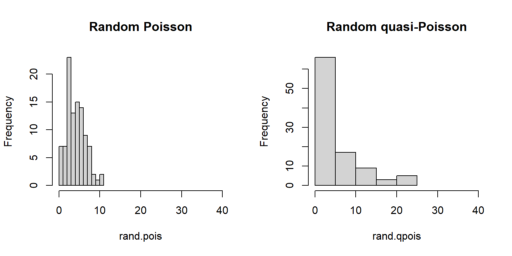
Now let’s simulate some overdispersed count data.
set.seed(42)
n <- 40
x <- runif(n, 0, 20)
beta0 <- 1.1
beta1 <- 0.72
phi <- 16
eta <- beta0 + beta1 * x
# Poisson data
yp <- rpois(n, eta)
# quasi-Poisson data
yq <- rqpois(n, eta, phi)
# plot the data
plot(x, yp, pch=16, ylim=c(0, 60),
ylab="Y", xlab="X")
points(x, yq, pch=16, col="red")
legend("topleft",
legend=c("Poisson", "Quasipoisson"),
pch=16, col=c("black", "red"))See what the overdispersion term did? The data simulated using a quasi-Poisson distribution are much more spread out than the data simulated using the Poisson distribution. Analyzing the quasi-Poisson data as if they were Poisson distributed might lead to underestimating the variance, especially at greater X values.
dat <- data.frame(x=x, y=yq)
mod1 <- glm(y~x, data=dat, family=poisson)
mod2 <- glm(y~x, data=dat, family=quasipoisson)
summary(mod1)##
## Call:
## glm(formula = y ~ x, family = poisson, data = dat)
##
## Deviance Residuals:
## Min 1Q Median 3Q Max
## -5.223 -2.174 -1.024 1.405 5.439
##
## Coefficients:
## Estimate Std. Error z value Pr(>|z|)
## (Intercept) 0.12441 0.20218 0.615 0.538
## x 0.15343 0.01236 12.416 <2e-16 ***
## ---
## Signif. codes: 0 '***' 0.001 '**' 0.01 '*' 0.05 '.' 0.1 ' ' 1
##
## (Dispersion parameter for poisson family taken to be 1)
##
## Null deviance: 487.11 on 39 degrees of freedom
## Residual deviance: 274.66 on 38 degrees of freedom
## AIC: 398.22
##
## Number of Fisher Scoring iterations: 6summary(mod2)##
## Call:
## glm(formula = y ~ x, family = quasipoisson, data = dat)
##
## Deviance Residuals:
## Min 1Q Median 3Q Max
## -5.223 -2.174 -1.024 1.405 5.439
##
## Coefficients:
## Estimate Std. Error t value Pr(>|t|)
## (Intercept) 0.12441 0.53258 0.234 0.817
## x 0.15343 0.03255 4.713 3.24e-05 ***
## ---
## Signif. codes: 0 '***' 0.001 '**' 0.01 '*' 0.05 '.' 0.1 ' ' 1
##
## (Dispersion parameter for quasipoisson family taken to be 6.939018)
##
## Null deviance: 487.11 on 39 degrees of freedom
## Residual deviance: 274.66 on 38 degrees of freedom
## AIC: NA
##
## Number of Fisher Scoring iterations: 6The model fits, parameter estimates, and diagnostics like deviance are essentially identical. But, as the figures below show, the Poisson GLM predicted much less variation about the mean than did the quasi-Poisson model.
# values for prediction
n.pr <- 100
px <- seq(min(x), max(x), length=n.pr)
pred1 <- predict(mod1, newdata=data.frame(x=px),
type="response", se.fit=TRUE)
pred2 <- predict(mod2, newdata=data.frame(x=px),
type="response", se.fit=TRUE)
# pull out predictions and calculate CI
mn1 <- pred1$fit
mn2 <- pred2$fit
lo1 <- qnorm(0.025, mn1, pred1$se.fit)
lo2 <- qnorm(0.025, mn2, pred2$se.fit)
up1 <- qnorm(0.975, mn1, pred1$se.fit)
up2 <- qnorm(0.975, mn2, pred2$se.fit)
# make the plots
par(mfrow=c(1,2), bty="n",
mar=c(5.1, 5.1, 1.1, 1.1),
lend=1, las=1, cex.lab=1.3, cex.axis=1.3)
plot(x, yq, pch=16, ylim=c(0, 50),
ylab="Y", xlab="X",
main="Poisson GLM fit")
points(px, lo1, type="l", col="red", lwd=3, lty=2)
points(px, up1, type="l", col="red", lwd=3, lty=2)
points(px, mn1, type="l", col="red", lwd=3)
plot(x, yq, pch=16, ylim=c(0, 50),
ylab="Y", xlab="X",
main="Quasi-Poisson fit")
points(px, lo2, type="l", col="red", lwd=3, lty=2)
points(px, up2, type="l", col="red", lwd=3, lty=2)
points(px, mn2, type="l", col="red", lwd=3)The right plot looks reasonable, but there is one small problem: the 95% CI calculated on the response scale extends below 0, which is not defined for a Poisson distribution. So, we should have calculated the CI on the link scale and back-transformed to get values on the response scale.
# predict on link scale instead:
pred2 <- predict(mod2, newdata=data.frame(x=px),
type="link", se.fit=TRUE)
mn2 <- pred2$fit
lo2 <- qnorm(0.025, mn2, pred2$se.fit)
up2 <- qnorm(0.975, mn2, pred2$se.fit)
# back-transform:
mn2 <- mod2$family$linkinv(mn2)
lo2 <- mod2$family$linkinv(lo2)
up2 <- mod2$family$linkinv(up2)
# make the plots
par(mfrow=c(1,2), bty="n",
mar=c(5.1, 5.1, 1.1, 1.1),
lend=1, las=1, cex.lab=1.3, cex.axis=1.3)
plot(x, yq, pch=16, ylim=c(0, 50),
ylab="Y", xlab="X",
main="Poisson GLM fit")
points(px, lo1, type="l", col="red", lwd=3, lty=2)
points(px, up1, type="l", col="red", lwd=3, lty=2)
points(px, mn1, type="l", col="red", lwd=3)
plot(x, yq, pch=16, ylim=c(0, 50),
ylab="Y", xlab="X",
main="Quasi-Poisson fit")
points(px, lo2, type="l", col="red", lwd=3, lty=2)
points(px, up2, type="l", col="red", lwd=3, lty=2)
points(px, mn2, type="l", col="red", lwd=3)
Notice that the lower confidence limit does not dip below 0 in the revised quasi-Poisson plot. The CI is somewhat asymmetrical, but that’s okay and not at all uncommon with log-transformed data or in models with log-link functions.
5.5.2 Example with real data
The US National Oceanic and Atmospheric Administration (NOAA) conducts periodic coral reef surveys in the Atlantic and Caribbean to monitor coral status (NOAA 2018). For this example, we will use data from 2016-2018 to explore the relationship between coral species richness and environmental factors. The survey sites are shown on the map below in relation to mainland Florida, the Keys, and the Tortugas60.

Download the dataset coral_glm_example.csv and put it in your R home directory.
in.name <- "coral_glm_example.csv"
dat <- read.csv(in.name, header=TRUE)The dataset contains many variables, but we are interested in the following:
| Variable | Units | Meaning |
|---|---|---|
date |
Days | Date sample was taken |
lat |
°N | North latitude |
long |
°E | Degrees east longitude |
rugo |
Unitless | Index of bottom roughness (rugosity) |
dep |
m | Mean depth of coral transect |
region |
Unitless | Geographic region where sample was taken |
rich |
Species | Number of coral species recorded on transect |
Let’s start by using histograms and scatterplot matrices to get a sense of what patterns might exist in the data.
head(dat)## date lat long rugo dep region rich
## 1 5/12/2016 24.72435 -82.81070 0.8433333 16.3068 Tortugas 8
## 2 5/12/2016 24.72367 -82.78785 0.4900000 16.3068 Tortugas 8
## 3 5/12/2016 24.72623 -82.80449 0.1766667 17.0688 Tortugas 1
## 4 5/12/2016 24.71759 -82.80542 0.2966667 13.4112 Tortugas 7
## 5 5/12/2016 24.71971 -82.81462 0.6300000 11.1252 Tortugas 5
## 6 5/12/2016 24.72118 -82.80761 0.8833333 12.4968 Tortugas 9par(mfrow=c(2,3))
hist(dat$lat)
hist(dat$long)
hist(dat$rugo)
hist(dat$dep)
hist(dat$rich)
The histograms suggest that latitude and rugosity might cause problems because of how many observations are clustered around a few values. Perhaps a log-transform would help? The plots from the commands below suggest not.
par(mfrow=c(2,2))
hist(dat$lat)
hist(log(dat$lat))
hist(dat$rugo)
hist(log(dat$rugo))Next, search for patterns in the dataset using some scatterplot matrices. We will make use of the custom function panel.cor(), which can be found in the examples in the help page for function pairs().
# make day of year a number
dat$doy <- as.numeric(format(as.Date(dat$date), "%j"))
# scatterplot matrices to explore
panel.cor <- function(x, y, digits = 2, prefix = "", cex.cor, ...)
{
usr <- par("usr"); on.exit(par(usr))
par(usr = c(0, 1, 0, 1))
r <- abs(cor(x, y))
txt <- format(c(r, 0.123456789), digits = digits)[1]
txt <- paste0(prefix, txt)
if(missing(cex.cor)) cex.cor <- 0.8/strwidth(txt)
text(0.5, 0.5, txt, cex = cex.cor * r)
}
num.cols <- c("rich", "lat", "long", "rugo", "dep", "doy")
pairs(dat[,num.cols], lower.panel = panel.smooth,
upper.panel = panel.cor, gap=0)
It appears that richness is somewhat correlated with latitude, longitude, and rugosity. Interestingly, latitude and longitude appear correlated. Can you think of why? (Hint: plot the coordinates and compare to a map of the Florida Keys). Because latitude and longitude are correlated, we should probably not fit a model with both of these variables included.
Based on the scatterplot matrix, it appears that latitude, longitude, and rugosity are most likely to be the variables driving coral species richness. There is a factor in our dataset, region, that also appears to play a role. However, we won’t model region with latitude or longitude because it is confounded with both.
# possible effect of region, confounded with lat/long
par(mfrow=c(2,3))
boxplot(rich~region, data=dat)
boxplot(lat~region, data=dat)
boxplot(long~region, data=dat)
boxplot(rugo~region, data=dat)
boxplot(dep~region, data=dat)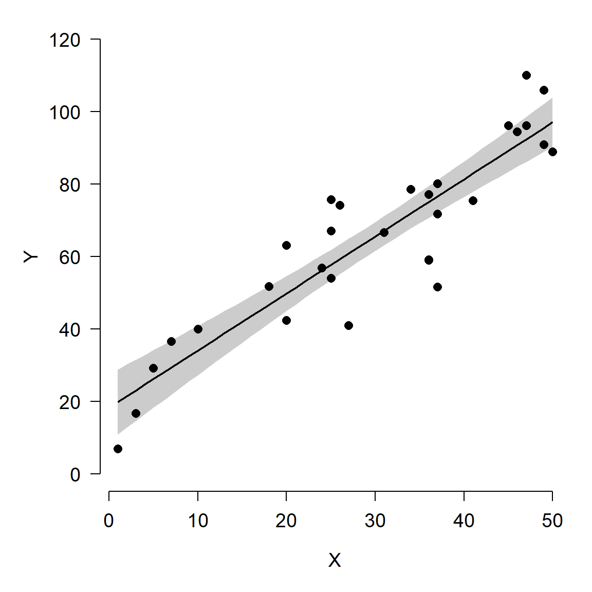
Finally, we suspect that there might be overdispersion in our response variable richness. This can be checked comparing the mean and variance of its distribution. Recall that a Poisson distribution has a single parameter \(\lambda\) that is both its mean and variance. If the variance of a count variable is larger than its mean, overdispersion should be suspected.
# possible overdispersion because var() > mean()
var(dat$rich)## [1] 11.15052mean(dat$rich)## [1] 6.504601How much larger than the mean can variance be before we start to worry about overdispersion? Opinions differ. Some authors use the ratio \(\rho=\sigma^{2}/\mu\) to define a rule of thumb (note that \(\rho\) is the Greek letter “rho”, not the Latin letter “p”). The threshold \(\rho\) varies by author: values as small as 2 and as large as 50 can be found in the literature! Our value, 1.71, is not very concerning but we should be aware of possible overdispersion anyway.
The commands below define some models that we will compare using information theoretic methods (i.e., AIC). We will not fit and compare every possible combination of predictors. Instead, we will fit only a narrow subset suggested by the exploratory data analysis. Julian date (doy, for “day of year”) is not considered. The only model with two continuous predictors has longitude and depth. Any other pair has some risk of collinearity. Region will only be tested by itself because the other variables appear to vary by region. Finally, we will test two versions of each model: one with a Poisson family, and another with a quasi-Poisson family that accounts for overdispersion.
mod01 <- glm(rich~lat, data=dat, family=poisson)
mod02 <- glm(rich~long, data=dat, family=poisson)
mod03 <- glm(rich~rugo, data=dat, family=poisson)
mod04 <- glm(rich~dep, data=dat, family=poisson)
mod05 <- glm(rich~long+dep, data=dat, family=poisson)
mod06 <- glm(rich~region, data=dat, family=poisson)
mod07 <- glm(rich~lat, data=dat, family=quasipoisson)
mod08 <- glm(rich~long, data=dat, family=quasipoisson)
mod09 <- glm(rich~rugo, data=dat, family=quasipoisson)
mod10 <- glm(rich~dep, data=dat, family=quasipoisson)
mod11 <- glm(rich~long+dep, data=dat, family=quasipoisson)
mod12 <- glm(rich~region, data=dat, family=quasipoisson)Next, we will use Akaike’s information criterion (AIC) to compare the goodness-of-fit of the models. Recall that AIC rewards predictive ability and penalizes model complexity (i.e., number of parameters), with smaller AIC indicating better fit.
aicdf <- AIC(mod01, mod02, mod03,
mod04, mod05, mod06,
mod07, mod08, mod09,
mod10, mod11, mod12)
aicdf## df AIC
## mod01 2 3131.119
## mod02 2 3254.461
## mod03 2 3287.994
## mod04 2 3567.371
## mod05 3 3256.438
## mod06 3 3128.355
## mod07 2 NA
## mod08 2 NA
## mod09 2 NA
## mod10 2 NA
## mod11 3 NA
## mod12 3 NAThe table of AIC values illustrates a downside of using quasi-likelihoods: because the likelihood is not actually defined, it is hard to calculate an AIC value (which depends on the likelihood function). There is such a thing as a “quasi-AIC” that you can use. But, we can take advantage of the fact that the quasi-Poisson and negative binomial are more or less interchangeable and refit models 7-12 using the negative binomial family. The base glm() function does not fit negative binomial GLMs, but there are a few options for negative binomial GLMs in add-on packages. We will use the function glm.nb() from package MASS.
library(MASS)
mod13 <- glm.nb(rich~lat, data=dat)
mod14 <- glm.nb (rich~long, data=dat)
mod15 <- glm.nb (rich~rugo, data=dat)
mod16 <- glm.nb (rich~dep, data=dat)
mod17 <- glm.nb (rich~long+dep, data=dat)
mod18 <- glm.nb (rich~region, data=dat)
# calculate AIC
aicdf <- AIC(mod01, mod02, mod03,
mod04, mod05, mod06,
mod13, mod14, mod15,
mod16, mod17, mod18)
aicdf## df AIC
## mod01 2 3131.119
## mod02 2 3254.461
## mod03 2 3287.994
## mod04 2 3567.371
## mod05 3 3256.438
## mod06 3 3128.355
## mod13 3 3126.964
## mod14 3 3235.538
## mod15 3 3260.363
## mod16 3 3439.161
## mod17 4 3237.537
## mod18 4 3126.858Next we calculate and use the AIC weight to determine which of these models is most likely to be best-fitting. This is not the same as calculating the probability that any particular model is correct. Rather, the AIC weight represents the probability that each model is the best-fitting of the models included in the AIC weight calculation.
aicdf <- aicdf[order(aicdf$AIC),]
aicdf$delta <- aicdf$AIC - min(aicdf$AIC)
aicdf$wt <- exp(-0.5*aicdf$delta)
aicdf$wt <- aicdf$wt/sum(aicdf$wt)
aicdf <- aicdf[order(-aicdf$wt),]
aicdf$cumsum <- cumsum(aicdf$wt)
aicdf## df AIC delta wt cumsum
## mod18 4 3126.858 0.0000000 3.937070e-01 0.3937070
## mod13 3 3126.964 0.1062192 3.733429e-01 0.7670499
## mod06 3 3128.355 1.4976903 1.861889e-01 0.9532388
## mod01 2 3131.119 4.2611044 4.676124e-02 1.0000000
## mod14 3 3235.538 108.6804455 9.897242e-25 1.0000000
## mod17 4 3237.537 110.6791284 3.643391e-25 1.0000000
## mod02 2 3254.461 127.6037518 7.697868e-29 1.0000000
## mod05 3 3256.438 129.5806317 2.864814e-29 1.0000000
## mod15 3 3260.363 133.5057437 4.025031e-30 1.0000000
## mod03 2 3287.994 161.1360641 4.026441e-36 1.0000000
## mod16 3 3439.161 312.3037967 6.015411e-69 1.0000000
## mod04 2 3567.371 440.5134831 8.687317e-97 1.0000000The AIC weights suggest that models 18 and 13 are most likely to be the best models, because they have the greatest AIC weights and their AIC weights are nearly equal. Model 18 is the negative binomial GLM with only region as a predictor; model 13 is the negative binomial GLM with only latitude as a predictor. Recall from above that latitude and region are strongly related to each other: latitude increases from the Tortugas to the Keys (FLK) and to southeast Florida (SEFCRI). So, it shouldn’t be surprising that these two models were nearly equivalent as measured by AIC. Because both models 18 and 13 have nearly equivalent support, we should present the predictions of both. In lieu of “predictions” of model 18, which has only factors as predictors, you can simply present the mean and SD or 95% CI within each group.
# plotting values for groups (model 18)
agg1 <- aggregate(rich~region, data=dat, mean)
agg1$lat <- aggregate(lat~region, data=dat, median)$lat
agg1$sd <- aggregate(rich~region, data=dat, sd)$rich
# reorder by latitude
agg1<- agg1[order(agg1$lat),]
lo1 <- agg1$rich - agg1$sd
up1 <- agg1$rich + agg1$sd
mn1 <- agg1$rich
# predicted values for model 13 (continuous predictor)
n <- 50
px <- seq(min(dat$lat), max(dat$lat), length=n)
pred2 <- predict(mod13, newdata=data.frame(lat=px),
type="link", se.fit=TRUE)
mn2 <- pred2$fit
lo2 <- qnorm(0.025, mn2, pred2$se.fit)
up2 <- qnorm(0.975, mn2, pred2$se.fit)
# back-transform to response scale
mn2 <- mod13$family$linkinv(mn2)
lo2 <- mod13$family$linkinv(lo2)
up2 <- mod13$family$linkinv(up2)
# define some colors for the model 13 plot
sites <- sort(unique(dat$region))
cols <- rainbow(length(sites))
dat$col <- cols[match(dat$region, sites)]
# make the plot
par(mfrow=c(1,2), bty="n", las=1, lend=1,
mar=c(5.1, 5.1, 1.1, 1.1), cex.axis=1.3,
cex.lab=1.3)
plot(1:3, mn1, pch=15, cex=1.3, xaxt="n",
xlab="Region", ylim=c(0, 12), xlim=c(0.5, 3.5),
ylab="Species richness")
segments(1:3, lo1, 1:3, up1, lwd=2)
axis(side=1, at=1:3, labels=agg1$region)
plot(px, mn2, type="n", ylab="Species richness",
xlab="", ylim=c(0, 12))
title(xlab=expression(Latitude~(degree*N)))
points(px, lo2, type="l", lwd=2, col="red", lty=2)
points(px, up2, type="l", lwd=2, col="red", lty=2)
points(px, mn2, type="l", lwd=2, col="red")
points(dat$lat, dat$rich, col=dat$col, cex=0.8)
legend("topright", legend=sites, pch=1, col=cols)The negative binomial model accounts for the fact that the data show more variability than would be expected under a Poisson distribution, and can be worked with in R much more easily than can the quasi-Poisson. The two fitted models should be presented together and compared. The authors should point out the relationship between latitude and region evident in the data. Another strategy for handling these data might be mixed models.
5.6 Logistic regression for binary outcomes
This section explores GLMs for binary outcomes. Binary outcomes are results that take one of two values: survival vs. non-survival, presence vs. absence, reproduction vs. not-reproducing, and so on. These data are usually coded as 1 and 0: 1 when the event occurs, and 0 when the event does not. No other values are allowed. The standard technique for modeling binary outcomes is logistic regression. This name refers to a GLM with a binomial family and logit link function.
Logistic regression is a technique for modeling the probability of a binary outcome: survival vs. death, reproductive vs. not reproductive, present vs. absent, etc. The response variable Y takes value 1 when the event occurs, and value 0 when the event does not occur. For each observation i, success occurs as the outcome of a Bernoulli trial with probability pi. The logit of pi (i.e., the logarithm of the odds that Y = 1) is modeled as a linear function of the predictor variables.
\[Y_i \sim Bernoulli\left(p_i\right)\] \[logit\left(p_i\right)=\log{\left(\frac{p_i}{1-p_i}\right)}=\beta_0+\beta_1X_i\]
The inverse link function is the logistic function, which is also where the name “logistic regression” comes from:
\[logistic\left(x\right)=\frac{e^x}{1+e^x}\]
The linear predictor in logistic regression predicts the “log-odds” of an event occurring. The unit of the log-odds scale is the logistic unit, or logit. The logit link function is useful because it allows the outcome of a linear function–which can take on any real value–to be mapped smoothly to the natural domain of probabilities, the open interval (0, 1). A key consequence of this link function is that increasing the value of one of the predictor variables by 1 will scale the log-odds by a constant. That constant is the coefficient estimated for the predictor.
The logistic regression model was developed in the 1940s, decades before the GLM was first proposed. Part of the development of the idea of the GLM was recognizing that many previously known models were actually special cases of a more general model. In GLM terms, we say that logistic regression is a GLM with a binomial family and logit link function.
5.6.1 Example with simulated data
As with the other GLM applications, we’ll start by simulating a suitable dataset and analyzing it. The code below will execute the simulation. Remember to set the random number seed for reproducibility.
set.seed(123)
n <- 30
x <- round(runif(n, 0, 12), 1)
# coefficients
beta0 <- -4
beta1 <- 0.8
# linear predictor
eta <- beta0 + beta1 * x
# logistic function (inverse link)
prob <- plogis(eta)
# draw y values (stochastic part)
y <- rbinom(n, 1, prob)
# assemble dataset
dat <- data.frame(x=x, y=y)
# take a look at the data:
head(dat)## x y
## 1 3.5 1
## 2 9.5 1
## 3 4.9 1
## 4 10.6 1
## 5 11.3 1
## 6 0.5 0Unlike other sorts of regression problems, plotting Y vs. X isn’t very illuminating:
plot(x, y)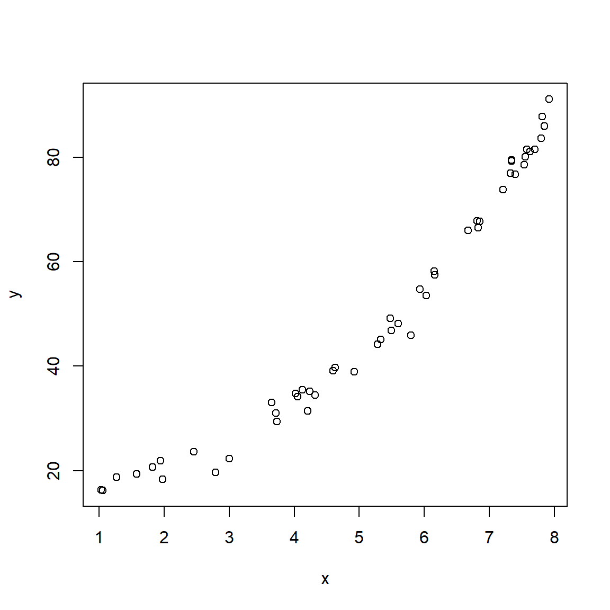
If you have a lot of duplicate coordinates, it can be hard to get a sense of how many 0s and 1s are in the dataset. The scatterplot above is also a little silly because most of the Y-axis range is not occupied. We can use function jitter() to add some random noise to the Y-values; this will help us see what is going on.
plot(x, jitter(y))
Another way to explore binary data is with a boxplot. A boxplot can show whether X tends to be smaller or greater when Y = 1; this is sort of the reverse of the question we are really asking, but it helps us make sense of the data as we explore.
boxplot(x~y)
The boxplot agrees with the scatterplot: Y seems more likely to occur at greater values of X. Making the boxplot horizontal makes the agreement more clear:
boxplot(x~y, horizontal=TRUE)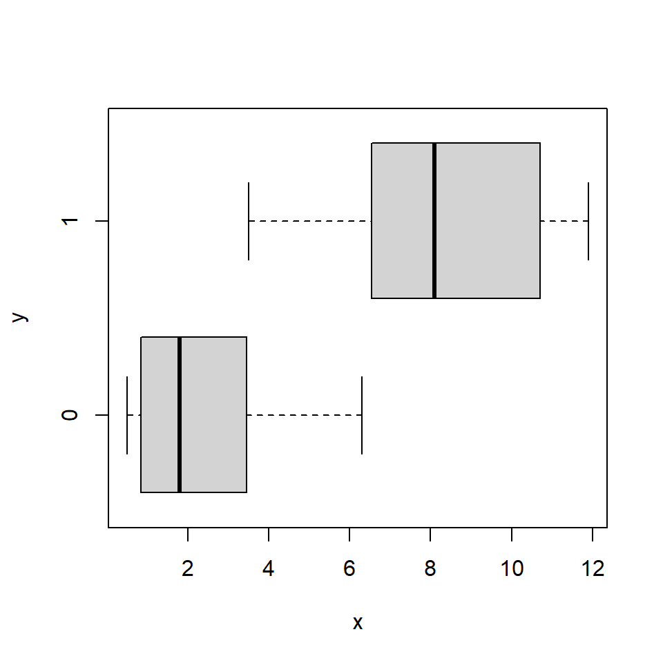
Logistic regression is fit using the glm() function. By definition, logistic regression is a GLM with a binomial family and logit link function. You don’t need to specify the link function in R, as the binomial family uses the logit link function by default.
mod1 <- glm(y~x, data=dat, family=binomial)
summary(mod1)##
## Call:
## glm(formula = y ~ x, family = binomial, data = dat)
##
## Deviance Residuals:
## Min 1Q Median 3Q Max
## -2.25927 0.02705 0.06648 0.29492 1.30865
##
## Coefficients:
## Estimate Std. Error z value Pr(>|z|)
## (Intercept) -3.7713 1.8349 -2.055 0.0399 *
## x 0.9909 0.4001 2.477 0.0133 *
## ---
## Signif. codes: 0 '***' 0.001 '**' 0.01 '*' 0.05 '.' 0.1 ' ' 1
##
## (Dispersion parameter for binomial family taken to be 1)
##
## Null deviance: 32.596 on 29 degrees of freedom
## Residual deviance: 13.193 on 28 degrees of freedom
## AIC: 17.193
##
## Number of Fisher Scoring iterations: 7The parameter estimates are pretty close to the correct values. We can calculate the pseudo-R2 as usual:
1-mod1$deviance/mod1$null.deviance## [1] 0.5952722The pseudo-R2 is pretty good for only having 30 observations. But, you should probably consider using AUC instead of pseudo-R2 (see below). The next step is to generate and plot the model predictions. For logistic regression models, predictions should be calculated on the link scale and back-transformed to get probabilities.
# values for prediction
use.n <- 50
px <- seq(min(dat$x), max(dat$x), length=use.n)
# calculate predictions and 95% CI (link scale)
pred <- predict(mod1, newdata=data.frame(x=px),
type="link", se.fit=TRUE)
mn <- pred$fit
lo <- qnorm(0.025, mn, pred$se.fit)
up <- qnorm(0.975, mn, pred$se.fit)
# inverse link function to get probabilities
mn <- mod1$family$linkinv(mn)
lo <- mod1$family$linkinv(lo)
up <- mod1$family$linkinv(up)Now make the plot. The argument xpd=NA to points() makes sure that all points are plotted, even those that fall outside of the plot area. This is needed because plot() defines the plot area using the maximum Y value (1), but some of the jittered Y values will be <0 or > 1 and thus won’t get plotted. We’ll use a polygon instead of the usual lines to show the 95% CI of the predicted probability.
par(mfrow=c(1,1), mar=c(5.1, 5.1, 1.1, 1.1),
bty="n", las=1, lend=1, cex.axis=1.3,
cex.lab=1.3)
plot(dat$x, dat$y, type="n", xlab="X",
ylab="p(Y)", ylim=c(0, 1), xlim=c(0, 12))
polygon(x=c(px, rev(px)),
y=c(lo, rev(up)), # REVerse either upper or lower
border=NA, col="grey80")
points(px, mn, type="l", lwd=3)
points(dat$x, jitter(dat$y, amount=0.05),
cex=1.1, xpd=NA)5.6.2 Example with real data
Bubrig et al. (2020) studied the influence of bacteria on the emergence of nematodes (Caenorhabditis elegans) from their dormant state. C. elegans sometimes enter a dormant state called a dauer that permits larvae to survive long periods of adverse conditions and to disperse long distances by passive transportation. The figure below shows the place of the dauer state in the normal C. elegans life cycle (Bubrig et al. 2020). Previous work had shown that successful colonization of new habitats by C. elegans is heavily influenced by the nearby bacterial community. The authors investigated whether the bacterial community could affect the emergence of individual worms from their dormant state.

In their experiment, they inoculated plates with one of three strains of C. elegans and one of five species of bacteria (or no bacteria as a control). After some time, the plates were treated with a chemical known to kill worms not in the dauer stage. The researchers then surveyed the plates and recorded each dead worm (which had emerged) as 1 and each worm still in dauer state (i.e., not emerged) as 0.
Download the dataset bubrig_2020_data.csv and put it in your R working directory.
in.name <- "bubrig_2020_data.csv"
dat <- read.csv(in.name, header=TRUE)
head(dat)## trial repl strain treat dose y categ
## 1 1 1 N2 Control 418.3225 1 Control
## 2 1 1 N2 Control 418.3225 1 Control
## 3 1 2 N2 Control 418.3225 1 Control
## 4 1 3 N2 Control 418.3225 1 Control
## 5 1 3 N2 Control 418.3225 1 Control
## 6 1 3 N2 Control 418.3225 1 ControlWe suspect that the response variable y is related to the predictors strain (of worm) and treat (“treatment” of bacteria). Both of these predictor variables are factors, so scatterplots won’t be very helpful. Instead, we can try some methods for visualizing categorical data. The function mosaicplot() produces a plot that partitions the observations by different combinations of factors61:
mosaicplot(strain~y, data=dat, color=TRUE)
mosaicplot(treat~y, data=dat, color=TRUE)Observations can be split by an arbitrary number of factors:
mosaicplot(strain~treat+y, data=dat, color=TRUE) mosaicplot(treat~strain+y, data=dat, color=TRUE)As you might have guessed, mosaic plots are a graphical way of representing a contingency table. Mosaic plots are great tools for data exploration, but don’t often make it into publications because they use a great deal of space and ink relative to the amount of information they convey. The equivalent contingency tables can be seen with the commands below:
ftable(y~strain, data=dat)## y 0 1
## strain
## CB4856 3925 2527
## JU1395 3007 3890
## N2 3755 1967ftable(y~treat, data=dat)## y 0 1
## treat
## Control 1662 1051
## EColi 1539 1254
## Providencia 1533 1408
## Pseudomonas 1735 1260
## Raoultella 1973 1639
## Serratia 2245 1772ftable(y~strain+treat, data=dat)## y 0 1
## strain treat
## CB4856 Control 681 330
## EColi 548 406
## Providencia 571 324
## Pseudomonas 559 337
## Raoultella 752 506
## Serratia 814 624
## JU1395 Control 518 530
## EColi 490 541
## Providencia 375 750
## Pseudomonas 519 593
## Raoultella 594 780
## Serratia 511 696
## N2 Control 463 191
## EColi 501 307
## Providencia 587 334
## Pseudomonas 657 330
## Raoultella 627 353
## Serratia 920 452Because we have a binary response variable, our first option should be logistic regression. Notice that we still call this model logistic “regression” even though there are no continuous predictors. Another name might be a “Binomial ANOVA”, in the same way that a regular ANOVA is just a special case of linear models. Just as we did in the Poisson regression examples, we will fit several models with different predictors and compare their efficacy using information theoretic methods.
For this example, we’re going to define model formulas ahead of time and fit the models in a loop. This is because the code for each model differs only in one part, the formula. Having the formulas in a separate vector and the models in a list will also make it easier to construct the AIC table for model selection. To match the original analysis done by Bubrig et al. (2020), we should treat strain N2 as the baseline. To do this, we need to re-specify the factor strain.
# convert to factor if not already
class(dat$strain)## [1] "character"# if "character", run next line:
dat$strain <- as.factor(dat$strain)
dat$strain <- relevel(dat$strain, ref="N2")Now we define the model formulas and fit the models.
# define some model formulas
forms <- c("y~strain", "y~treat",
"y~strain+treat", "y~strain*treat")
# make a list to hold models
mlist <- vector("list", length(forms))
# fit models in a loop
for(i in 1:length(forms)){
mlist[[i]] <- glm(forms[i], data=dat, family=binomial)
}Constructing the AIC table is made easy; all we have to do is pull AIC values from the list. Compare this to the method in the previous section, where we had to type out each model’s name.
# construct AIC table
aicdf <- data.frame(mod=1:length(forms),
form=forms,
aic=sapply(mlist, AIC))
# calculate AIC weights
aicdf <- aicdf[order(aicdf$aic),]
aicdf$delta <- aicdf$aic - min(aicdf$aic)
aicdf$wt <- exp(-0.5*aicdf$delta)
aicdf$wt <- aicdf$wt/sum(aicdf$wt)
aicdf <- aicdf[order(-aicdf$wt),]
aicdf$cumsum <- cumsum(aicdf$wt)
aicdf## mod form aic delta wt cumsum
## 4 4 y~strain*treat 25356.38 0.00000 1.000000e+00 1
## 3 3 y~strain+treat 25400.32 43.93681 2.879002e-10 1
## 1 1 y~strain 25457.15 100.76847 1.313424e-22 1
## 2 2 y~treat 26114.37 757.98983 2.538633e-165 1The AIC table suggests that the model with an interaction is by far the most likely to be the best-fitting model of these four. In a publication, the AIC weight for model 4 should be reported as > 0.9999 and the other models as <0.0001, not the values shown here (the printed AIC = 1 for model 4 cannot be correct if any other model has a weight > 0; there is an R precision issue here). Let’s check the summary table and see if that is reasonable. We should also compare the summary table to the mosaic plots. The command below shows another advantage of keeping models in a list: we can call models by their position in the ordered AIC table.
summary(mlist[[aicdf$mod[1]]])##
## Call:
## glm(formula = forms[i], family = binomial, data = dat)
##
## Deviance Residuals:
## Min 1Q Median 3Q Max
## -1.482 -1.014 -0.894 1.168 1.569
##
## Coefficients:
## Estimate Std. Error z value Pr(>|z|)
## (Intercept) -0.88545 0.08600 -10.296 < 2e-16 ***
## strainCB4856 0.16098 0.10906 1.476 0.139917
## strainJU1395 0.90836 0.10589 8.578 < 2e-16 ***
## treatEColi 0.39570 0.11247 3.518 0.000434 ***
## treatProvidencia 0.32157 0.10997 2.924 0.003453 **
## treatPseudomonas 0.19686 0.10931 1.801 0.071700 .
## treatRaoultella 0.31098 0.10873 2.860 0.004237 **
## treatSerratia 0.17476 0.10342 1.690 0.091047 .
## strainCB4856:treatEColi 0.02885 0.14641 0.197 0.843775
## strainJU1395:treatEColi -0.31958 0.14267 -2.240 0.025092 *
## strainCB4856:treatProvidencia -0.16375 0.14639 -1.119 0.263322
## strainJU1395:treatProvidencia 0.34868 0.14110 2.471 0.013471 *
## strainCB4856:treatPseudomonas 0.02154 0.14561 0.148 0.882395
## strainJU1395:treatPseudomonas -0.08647 0.13921 -0.621 0.534473
## strainCB4856:treatRaoultella 0.01729 0.14010 0.123 0.901753
## strainJU1395:treatRaoultella -0.06146 0.13640 -0.451 0.652285
## strainCB4856:treatSerratia 0.28390 0.13426 2.115 0.034464 *
## strainJU1395:treatSerratia 0.11132 0.13381 0.832 0.405476
## ---
## Signif. codes: 0 '***' 0.001 '**' 0.01 '*' 0.05 '.' 0.1 ' ' 1
##
## (Dispersion parameter for binomial family taken to be 1)
##
## Null deviance: 26159 on 19070 degrees of freedom
## Residual deviance: 25320 on 19053 degrees of freedom
## AIC: 25356
##
## Number of Fisher Scoring iterations: 4In a typical ANOVA, the coefficients for each factor represent the difference in means from the baseline. In this logistic regression model, the coefficients represent differences in the log of the odds ratio. Recall that the link scale for logistic regression is the log of the odds ratio. The odds ratio of an event with probability p is \(p/(1-p)\). In practical terms, this describes the relative likelihood of an event occurring. For example, if the odds ratio for treatment A vs. control is 1.8, then the event is 1.8 times more likely to occur in treatment group A. Alternatively, being in treatment A increases the probability of the event by a factor of 1.8. The SE of the coefficient can be used to estimate a 95% CI of the odds ratio.
coefs <- summary(mlist[[4]])$coefficients
coefs## Estimate Std. Error z value Pr(>|z|)
## (Intercept) -0.88545363 0.08599663 -10.2963755 7.316629e-25
## strainCB4856 0.16098397 0.10906031 1.4761005 1.399169e-01
## strainJU1395 0.90835539 0.10589011 8.5782836 9.629926e-18
## treatEColi 0.39569527 0.11246670 3.5183329 4.342673e-04
## treatProvidencia 0.32156980 0.10996822 2.9242066 3.453355e-03
## treatPseudomonas 0.19686226 0.10930596 1.8010204 7.169966e-02
## treatRaoultella 0.31097514 0.10873444 2.8599508 4.237067e-03
## treatSerratia 0.17476214 0.10341550 1.6899028 9.104656e-02
## strainCB4856:treatEColi 0.02885225 0.14640819 0.1970672 8.437750e-01
## strainJU1395:treatEColi -0.31958315 0.14267199 -2.2399852 2.509188e-02
## strainCB4856:treatProvidencia -0.16374584 0.14638809 -1.1185735 2.633221e-01
## strainJU1395:treatProvidencia 0.34867562 0.14110387 2.4710563 1.347146e-02
## strainCB4856:treatPseudomonas 0.02154085 0.14561178 0.1479334 8.823953e-01
## strainJU1395:treatPseudomonas -0.08647351 0.13920564 -0.6211926 5.344729e-01
## strainCB4856:treatRaoultella 0.01729485 0.14009989 0.1234466 9.017535e-01
## strainJU1395:treatRaoultella -0.06146231 0.13640390 -0.4505905 6.522847e-01
## strainCB4856:treatSerratia 0.28389752 0.13425558 2.1146050 3.446363e-02
## strainJU1395:treatSerratia 0.11131617 0.13381251 0.8318816 4.054758e-01In our model, we have an interaction, so interpreting the coefficients is tricky. The interaction term between strain and treatment means that the effects of strain and the effects of treatment should not be interpreted by themselves. Let’s start with the coefficients in a simpler version of the model, the one without the interaction:
Let’s interpret the terms from top to bottom. The Intercept term describes the expectation for an observation with all factors at their baseline values (strain = N2, treatment = control). We can translate this to a probability using the inverse logit function:
plogis(coefs[1,1])## [1] 0.2920489So, an N2 worm in the control treatment has a 0.29 probability of emerging from dauer.
The next two coefficients, strainCB4856 and strainJU1395, describe the odds ratios of animals from the other worm strains, in the control group. The odds ratios for emerging from dauer while being in one of those strains instead of the baseline strain are obtained by exponentiating the estimates.
exp(coefs[2:3,1])## strainCB4856 strainJU1395
## 1.174666 2.480240This means that a CB4856 worm in the control treatment would be 1.17 times more likely to emerge than an N2 worm in the control group, and a JU1395 worm in the control treatment would be 2.48 times as likely to emerge as an N2 worm in the control group. The 95% CI for those odds ratios are:
exp(coefs[2:3,1]-1.96*coefs[2:3,2])## strainCB4856 strainJU1395
## 0.9485942 2.0153861exp(coefs[2:3,1]+1.96*coefs[2:3,2])## strainCB4856 strainJU1395
## 1.454616 3.052314So, within the control treatment, CB4856 worms are 1.17 times more likely to emerge, and we are 95% confident that the odds ratio is in the interval [0.948, 1.455].
The next set of coefficients, treatEColi, treatProvidencia, treatPseudomonas, treatRaoultella, and treatSerratia, are the effects of the bacterial treatments for worms in the control strain N2. So, N2 worms exposed to E. coli are 1.485 times as likely to emerge as control worms, with a 95% CI of [1.19, 1.85].
exp(coefs[4,1])## [1] 1.485417exp(coefs[4,1]-1.96*coefs[4,2])## [1] 1.191557exp(coefs[4,1]+1.96*coefs[4,2])## [1] 1.851748Now that we understand what the main effects represent, we need to understand what the main effects are not. The coefficients for the main effects (i.e., effects that are not part of the interaction) are the effects of changing one factor with the other factor held at its baseline. The main effects coefficients are NOT the overall effect of any factor. Talking about the “overall effect of a factor” or “independent effect of a factor” doesn’t even make sense in the presence of an interaction. This is because the effect of each factor affects the effects of the other. This is the definition of an interaction. In our example, the coefficient 0.16098397 estimated for strainCB4856 applies only for worms in the baseline strain, not for worms in other strains.
The interaction coefficients describe the changes in odds ratio for observations when both the strain and treatment factors are different from their baselines. For example, strainCB4856:treatEColi is the effect of worm strain CB4856 and treatment E. coli relative to worm strain N2 and the control treatment: 1.02 times, 95% CI [0.77, 1.37].
exp(coefs[9,1])## [1] 1.029273exp(coefs[9,1]-1.96*coefs[9,2])## [1] 0.7725119exp(coefs[9,1]+1.96*coefs[9,2])## [1] 1.371373We can use R to construct a table of the odds ratios for each treatment; this table can be presented as a result or used to build a figure.
coefs <- summary(mlist[[4]])$coefficients
coefs <- data.frame(coefs)
coefs <- coefs[,c(1,2,4)]
names(coefs) <- c("est", "se", "p")
coefs$strain <- "N2"
coefs$strain[grep("CB4856", rownames(coefs))] <- "CB4856"
coefs$strain[grep("JU1395", rownames(coefs))] <- "JU1395"
treats <- mlist[[4]]$xlevels$treat
coefs$trt <- "Control"
for(i in 1:length(treats)){
flag <- grep(treats[i], rownames(coefs))
coefs$trt[flag] <- treats[i]
}
# reorder using order from original factors
coefs$strain <- factor(coefs$strain, levels=mlist[[4]]$xlevels$strain)
coefs$trt <- factor(coefs$trt, levels=treats)
coefs <- coefs[order(coefs$strain, coefs$trt),]
# calculate odds ratios
coefs$or <- exp(coefs$est)
coefs$lo <- coefs$or - 1.96*coefs$se
coefs$up <- coefs$or + 1.96*coefs$se
# significant?
coefs$sig <- ifelse(coefs$p < 0.05, 1, 0)
# clean up
res <- coefs
rownames(res) <- NULL
res <- res[,-c(1:3)]
# by definition:
res$or[1] <- 1
res$lo[1] <- 1
res$up[1] <- 1
res$sig[1] <- NA
# admire your handiwork:
res## strain trt or lo up sig
## 1 N2 Control 1.0000000 1.0000000 1.000000 NA
## 2 N2 EColi 1.4854166 1.2649819 1.705851 1
## 3 N2 Providencia 1.3792913 1.1637536 1.594829 1
## 4 N2 Pseudomonas 1.2175763 1.0033366 1.431816 0
## 5 N2 Raoultella 1.3647553 1.1516358 1.577875 1
## 6 N2 Serratia 1.1909629 0.9882685 1.393657 0
## 7 CB4856 Control 1.1746661 0.9609079 1.388424 0
## 8 CB4856 EColi 1.0292725 0.7423125 1.316233 0
## 9 CB4856 Providencia 0.8489578 0.5620371 1.135878 0
## 10 CB4856 Pseudomonas 1.0217745 0.7363754 1.307174 0
## 11 CB4856 Raoultella 1.0174453 0.7428495 1.292041 0
## 12 CB4856 Serratia 1.3282968 1.0651559 1.591438 1
## 13 JU1395 Control 2.4802402 2.2726955 2.687785 1
## 14 JU1395 EColi 0.7264518 0.4468147 1.006089 1
## 15 JU1395 Providencia 1.4171894 1.1406258 1.693753 1
## 16 JU1395 Pseudomonas 0.9171598 0.6443168 1.190003 0
## 17 JU1395 Raoultella 0.9403884 0.6730367 1.207740 0
## 18 JU1395 Serratia 1.1177482 0.8554757 1.380021 0We can use the table res to make a nice figure that distills the entire model down to the effect sizes (i.e., odds ratios):
use.y <- length(treats):1
strains <- as.character(unique(res$strain))
res$col <- ifelse(res$sig == 1, "black", "white")
par(mfrow=c(3, 1), mar=c(5, 10, 1,1), bty="n",
las=1, lend=1, cex.lab=1.2, cex.axis=1.3)
for(i in 1:length(strains)){
flag <- which(res$strain == strains[i])
plot(res$or[flag], use.y, type="n",
xlab="Odds ratio", yaxt="n",
xlim=c(0, 3), ylab="")
axis(side=2, at=use.y, labels=treats)
segments(res$lo[flag], use.y,
res$up[flag], use.y, lwd=2)
title(main=paste("Strain", strains[i]), adj=0)
segments(1, 1, 1, length(treats), lty=2)
points(res$or[flag], use.y, cex=1.5,
pch=21, bg=res$col[flag])
}
legend("bottomright",
legend=c("Significant", "Nonsignificant"),
pch=21, pt.bg=c("black", "white"),
pt.cex=1.5, bty="n")
Or even better, combine the three strains onto a single panel. You can adjust the Y coordinate offsets (res$yoff) and other inputs to fine-tune the plot.
shps <- 21:23
matchx <- match(res$strain, unique(res$strain))
res$shape <- shps[matchx]
res$yoff <- matchx-1
res$y <- use.y[match(res$trt, unique(res$trt))]
res$y <- res$y + res$yoff/10
par(mfrow=c(1, 1), mar=c(5, 10, 1,1), bty="n",
las=1, lend=1, cex.lab=1.2, cex.axis=1.3)
plot(res$or, res$y, type="n",
pch=res$shape, cex=1.3,
bg=ifelse(res$sig == 1, "black", "white"),
xlab="Odds ratio", yaxt="n",
xlim=c(0, 3), ylab="")
segments(1, 1, 1, 6, lty=2)
segments(res$lo, res$y, res$up, res$y, lwd=3)
points(res$or, res$y,
pch=res$shape, cex=1.3,
bg=ifelse(res$sig == 1, "black", "white"))
axis(side=2, at=use.y, labels=unique(res$trt))
legend("bottomright",
legend=c("Significant", "Nonsignificant"),
pch=21, pt.bg=c("black", "white"),
pt.cex=1.5, bty="n")
legend("right", legend=unique(res$strain),
pch=shps, bty="n", pt.cex=1.5,
pt.bg="black")5.6.3 Logistic GLM diagnostics: AUC and ROC
Logistic regression is one way of solving what statisticians sometimes call a classification problem, where we want to use some set of predictor variables to classify observations into one category or another. The binary case is the simplest classification problem. The predictions of a logistic regression model will predict each observation to either be 0 or 1. We can use those predictions, and how often they are correct, to evaluate the efficacy of a logistic regression model.
First let’s define a function to get the predictions for a logistic regression model for its input data, with user-specified “cut-off” value that determines how great the predicted probability needs to be before declaring the prediction a 1 instead of a 0. The default, 0.5, means that any observation with a predicted probability >0.5 will be counted as 1.
# function to get prediction:
pred.fun <- function(mod, data, res = "y",
pos = 1, neg = 0, cut = 0.5) {
probs <- predict(mod, newdata = data, type = "response")
ifelse(probs > cut, pos, neg)
}
# test it out:
p1 <- pred.fun(mlist[[4]])
ftable(p1~dat$y) ## p1 0 1
## dat$y
## 0 7680 3007
## 1 4494 3890This contingency table is called a confusion matrix and it summarizes how often the model is correct for a given cutoff value. Here, when the model predicts a success (y = 1), it is correct for 3890 out of (3890+3007) = 6897 observations. Confusion matrices are usually summarized by two measures, sensitivity and specificity.
Sensitivity measures what proportion of successes were correctly identified. This is also called the true positive rate. Sensitivity answer the question, “What proportion of observations predicted to have y = 1 were actually 1? Sensitivity is calculated as:
\[Sensitivity=\frac{n(true\ positives)}{n(true\ positives)+n(false\ negatives)}\]
In our example, the sensitivity is 3890 / (3890 + 4494) = 0.463.
Specificity measures what proportion of failures (y = 0) were correctly identified. It is also called the true negative rate. It is calculated as:
\[Specificity=\frac{n(true\ negatives)}{n(true\ negatives)+n(false\ positives)}\]
In our example, the specificity was 7680 / (7680 + 3007) = 0.718.
The characteristics of the study system, the dataset, and the analysis can affect the sensitivity and the specificity of a model. If correctly identifying true positives is important (e.g., in disease screenings), then a model with greater sensitivity is preferred. If correctly identifying true negatives is important, then a model with greater specificity is preferred. The sensitivity and specificity can be varied by changing the threshold for 1 vs. 0.
A receiver operating characteristic (ROC) curve shows how sensitivity and specificity covary at different cut-off thresholds. We can construct an ROC curve by summarizing the confusion matrix at different cut-offs. The code below shows how to do this manually, so you can see for yourself how AUC is calculated. Afterwards, we’ll use functions from an add-on package to save some work.
# vector of cut offs to test
co <- seq(0, 1, by=0.01)
# vectors to hold specificity and sensitivity
sen <- spe <- numeric(length(co))
# calculate sensitivity and specificity in a loop
for(i in 1:length(co)){
# predictions for current cutoff value
pred <- pred.fun(mlist[[4]], cut=co[i])
# rearrange to data frame
con.mat <- data.frame(ftable(dat$y~pred))
con.mat$pred <- as.numeric(as.character(con.mat$pred))
con.mat$dat.y <- as.numeric(as.character(con.mat$dat.y))
# special case: no predicted 1s
if(! 1 %in% con.mat$pred){
add.df <- data.frame(pred=1, dat.y=0:1, Freq=0)
con.mat <- rbind(con.mat, add.df)
}
# special case: no predicted 0s
if(! 0 %in% con.mat$pred){
add.df <- data.frame(pred=0, dat.y=0:1, Freq=0)
con.mat <- rbind(con.mat, add.df)
}
# sensitivity:
tp <- which(con.mat$pred == 1 & con.mat$dat.y == 1)
fn <- which(con.mat$pred == 0 & con.mat$dat.y == 1)
sen[i] <- con.mat$Freq[tp] / (
con.mat$Freq[tp] + con.mat$Freq[fn])
# specificity:
tn <- which(con.mat$pred == 0 & con.mat$dat.y == 0)
fp <- which(con.mat$pred == 1 & con.mat$dat.y == 0)
spe[i] <- 1-con.mat$Freq[tn] /
(con.mat$Freq[tn] + con.mat$Freq[fp])
}
plot(spe, sen, type="l", lwd=2,
xlim=c(0,1), ylim=c(0,1),
xlab="False positive rate",
yla="True positive rate")
segments(0, 0, 1, 1, col="red", lwd=2)The diagonal red line shows the case of a model where predictions of 1 are just a likely to be true positives as false positives. Obviously, the curve for your model should fall above this line! The curve for a well-fitting model should increase quickly as false positive rate increases from 0, and reach a y value of 1 very quickly. A model that perfectly classifies observations should have an area under the curve (AUC) of 1 (can you see why?). A model that predicts an equal number of true positives and false positives has an AUC of 0.5. This represents a model that is no better than random chance at being correct, and is the “worst case scenario” for a classification model like logistic regression. We can approximate the AUC using rectangles:
plot(spe, sen, type="l", lwd=2,
xlim=c(0,1), ylim=c(0,1),
xlab="False positive rate",
yla="True positive rate")
segments(0, 0, 1, 1, col="red", lwd=2)
# add to previous plot:
rect(spe[-length(spe)], 0,
spe[-1], sen, border="black",
col="#0000FF20")And the numerical integration (lazy way):
auc1 <- sum((diff(spe)*-1) * sen[-1])
auc2 <- sum((diff(spe)*-1) * sen[-length(sen)])
(auc1+auc2)/2## [1] 0.6172765The AUC of 0.617 is not too bad, but not great either. Remember that 0.5 is model no better than a coin flip, and 1 is perfect.
As much fun as it is to manually calculate ROC curves and definite integrals, we can get the ROC and AUC much more quickly using the functions in package pROC.
library(pROC)## Type 'citation("pROC")' for a citation.##
## Attaching package: 'pROC'## The following objects are masked from 'package:stats':
##
## cov, smooth, var# generate predictions (probabilities)
p1 <- predict(mlist[[4]], type="response")
roc1 <- roc(dat$y ~ p1, plot = TRUE, print.auc = TRUE)## Setting levels: control = 0, case = 1## Setting direction: controls < cases
roc1##
## Call:
## roc.formula(formula = dat$y ~ p1, plot = TRUE, print.auc = TRUE)
##
## Data: p1 in 10687 controls (dat$y 0) < 8384 cases (dat$y 1).
## Area under the curve: 0.6173The AUC calculated by package pROC (0.6173) is close to the value we calculated by hand. If you don’t like the default figure produced by roc(), you can extract the sensitivity and sensitivity scores and make your own plot.
# 1- to orient axis correct way:
x <- 1-roc1$specificities
y <- roc1$sensitivities
plot(x,y, type="l")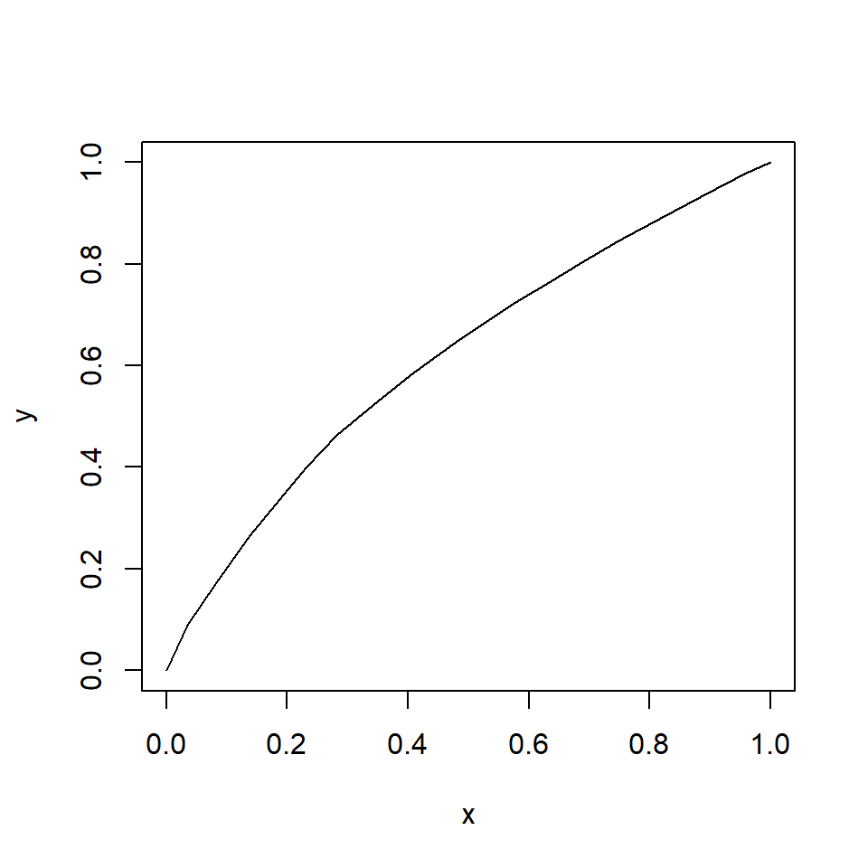
5.7 Binomial GLM for proportional data
This module explores GLMs for proportional data. Proportional data describe the number of times that some event occurs, relative to the total number of times it could occur. Many phenomena that biologists study are expressed as proportions: proportion of individuals surviving, proportion of individuals with trait A, proportion of area covered by species X, and so on. Analyzing proportions is a lot like analyzing binary outcomes; i.e., logistic regression. In fact, they are both GLMs with a binomial family. All that differs is the n term. In logistic regression the interest is in predicting the outcomes of single trials, while in binomial regression the interest is in predicting the proportion of observations in a certain state. Any dataset suitable for logistic regression can be converted to a dataset suitable for binomial regression. How you should analyze your data depends on your question:
- If the question is about outcomes at the individual observation level, then use logistic regression.
- If the question is about rates or probabilities of an event occurring, then use binomial regression.
One good clue is to consider the level at which predictor variables are measured. If many observations share the same value of a predictor variable (or the same values of many predictor variables), then binomial regression might be the right approach because the sample unit is really the group. For example, if you want to model nestling survival in birds, all of the chicks within a nest would have the same values of any predictor variable that applied to the nest. Thus, binomial regression would be appropriate. If, however, there were chick-level predictors, then logistic regression would be appropriate. Think about what level of organization your predictor and response variables occur at, and what question you are really asking.
5.7.1 Binomial GLM
Binomial regression or binomial GLM is related to logistic regression. Both are models for binary outcomes. Binary outcomes are those resulting from trials in which some event can either occur or not. When the event occurs, the trial is counted as a success. For example, if you flip a fair coin one time, that is one trial. The coin will come up heads with probability 0.5. If you flip the coin 10 times and get heads 4 times, then your observation (10 coin flips) had 10 trials (each flip) and 4 successes (times that heads came up). In logistic regression, each observation represents the outcome of one and only one trial (i.e., n = 1). In binomial regression, each observation can represent the outcome of many trials. This means that logistic regression is a special case of binomial regression.
Binary data can be represented in more than one way, so long as the number of trials and successes are known. Consider a study where researchers want to model the probability of a fish spawning in relation to environmental conditions. Their data will consist of the number of female fish in a population that spawn and the total number of female fish in the population.
- The number of trials (n) is the number of fish that could have spawned.
- The number of successes is the number of fish that spawned.
- The probability of success (p) is ratio of successes to trials; in this case, the number of spawning fish divided by the number of potential spawners.
If the same number of fish were sampled in each stream reach, then the researchers could use the number fo spawning fish as their response variable (i.e., number of successes). If the number of fish varied between observations, then they should use the proportion of spawners (p) as their response variable. Both ways of expressing the data are correct, but one may be more useful.
Binary data are usually modeled as coming from a binomial distribution. The binomial distribution describes the number of successes, or times an event occurs, in n trials with probability p in each trial. For example, if you flip a fair coin 10 times, the number of heads \(n_{heads}\) will follow the distribution:
\[n_{heads}\sim Binomial\left(10,\ 0.5\right) \]
The distribution of outcomes is shown below:

Proportional data can be expressed in two ways: as the number of successes observed out of n trials, or as the proportion of successes (i.e., p). This proportion can be thought of as the probability that a success will occur. Both ways emphasize different components of the binomial distribution that generated the data.
When analyzing proportional data, we have the option of using one of two equivalent representations of the model.
Form 1: Response variable as number of occurrences
The first form frames the model in terms of the number of successes:
\[y_i \sim Binomial\left(n_i,\ p_i\right)\]
\[logit\left(p_i\right)=\beta_0+\beta_1\]
In these equations,
- \(y_i\) is the number of trials in observation i in which some event occurs.
- \(n_i\) is the number of trials included in observation i.
- \(p_i\) is the probability of some event occurring in observation i.
- \(\beta_0\) and \(\beta_1\) are the regression intercept and slope.
The response variable \(y_i\) in this form is a non-negative integer. For example, if a toxicity trial exposes midges to 6 different concentrations of a toxin, and 20 organisms are exposed per concentration, then the number of organisms in each group that dies would be the response variable.
Form 2: Response variable as proportion of successes
The second way a binomial GLM can be expressed is in terms of the proportion of trials in which an event occurs:
\[y_i=\frac{z_i}{n_i}\]
\[z_i \sim Binomial\left(n_i,\ p_i\right)\]
\[logit\left(p_i\right)=\beta_0+\beta_1\]
In this form:
- \(y_i\) is the proportion of trials in observation i in which some event occurs.
- \(z_i\) is the number of trials in observation i in which some event occurs.
- \(n_i\) is the number of trials included in observation i.
- \(p_i\) is the probability of some event occurring in observation i.
- \(\beta_0\) and \(\beta_1\) are the regression intercept and slope.
The response variable \(y_i\) in this form is a proportion in the interval [0, 1], and represents the probability \(p_i\). For example, if a toxicity trial exposes midges to 6 different concentrations of a toxin, and 20 organisms are exposed per concentration, then the proportion of organisms in each group that dies would be the response variable.
You can think of your binomial regression model in either format. Notice that the deterministic part of the model is exactly the same in both forms of the binomial GLM, and the same as in logistic regression. The stochastic part is also the same in both forms of the binomial GLM. The stochastic part of logistic regression is usually written with the Bernoulli distribution, but could be rewritten as \(y_i \sim Binomial\left(1,\ p_i\right)\) to emphasize its status as a special case of binomial regression.
If you have proportional data, the proportion version (form 2) is more straightforward to fit in R. The regression coefficients will be the same no matter which format you use. The examples below use the proportion format.
5.7.2 Example with simulated data
The example below shows how to simulate and fit a binomial GLM on proportions. First, let’s simulate the data.
set.seed(123)
n <- 50
x <- runif(n, 0, 10)
z <- 3 + -0.75*x + rnorm(n, 0, 1)
# inverse logit
y <- round(plogis(z), 1)
# weights = sample sizes
# use same size for each observation for simplicity
wts <- rep(10, n)
# plot of a proportion (y) vs. a predictor (x)
plot(x, y)We use GLM to fit the binomial model. The command below will specify a binomial GLM with the default logit link. In another context this is how we fit a logistic regression. Adding the argument weights, which defines the sample sizes represented by each probability (Y value) converts the model to a binomial regression. For example, an observation with Y = 0.3 and weights = 10 represents a trial or group of observations with 3 successes in 10 trials. There are other ways of specifying these weights (see ?family) but this is the simplest. Note that if you try to do this analysis without supplying weights, R will return a warning (because it expects 1s and 0s for logistic regression) and will not calculate the deviance correctly (because it doesn’t know how many trials each probability represents).
mod1 <- glm(y~x, family=binomial, weights=wts)
summary(mod1)##
## Call:
## glm(formula = y ~ x, family = binomial, weights = wts)
##
## Deviance Residuals:
## Min 1Q Median 3Q Max
## -2.8868 -0.7281 -0.2132 0.7710 2.0987
##
## Coefficients:
## Estimate Std. Error z value Pr(>|z|)
## (Intercept) 2.52369 0.26503 9.522 <2e-16 ***
## x -0.63974 0.05588 -11.449 <2e-16 ***
## ---
## Signif. codes: 0 '***' 0.001 '**' 0.01 '*' 0.05 '.' 0.1 ' ' 1
##
## (Dispersion parameter for binomial family taken to be 1)
##
## Null deviance: 288.207 on 49 degrees of freedom
## Residual deviance: 57.294 on 48 degrees of freedom
## AIC: 150.55
##
## Number of Fisher Scoring iterations: 4The parameter estimates are close to the true values and the pseudo-R2 is pretty good:
1-mod1$deviance/mod1$null.deviance## [1] 0.8012043Let’s generate predicted values and plot them in the usual way:
# values for prediction
n <- 50
px <- seq(min(x), max(x), length=n)
# calculate predictions on link scale
pred1 <- predict(mod1,
newdata=data.frame(x=px),
type="link", se.fit=TRUE)
mn1 <- pred1$fit
lo1 <- qnorm(0.025, mn1, pred1$se.fit)
up1 <- qnorm(0.975, mn1, pred1$se.fit)
# backtransform with inverse link function
mn1 <- mod1$family$linkinv(mn1)
lo1 <- mod1$family$linkinv(lo1)
up1 <- mod1$family$linkinv(up1)
# make the plot:
plot(x, y, xlab="X", ylab="Y", type="n",
ylim=c(0, 1))
points(px, lo1, type="l", lty=2, lwd=2)
points(px, up1, type="l", lty=2, lwd=2)
points(px, mn1, type="l", lwd=2)
points(x,y)
Remember that logistic regression and binomial regression are the same model. Both address a binary outcome, but at different levels. Which of the two you should use depends on the nature of your question, the way in which data were collected, and the kind of prediction you are trying to make.
5.8 Gamma models for overdispersed data
This section explores GLMs for data following a gamma distribution. Gamma-distributed data can show up in two ways in biology: waiting times, or overdispersed continuous data (i.e., data where \(\sigma > \mu\)). The latter case can also be well-modeled by a log-linear GLM, but the gamma GLM offers an elegant (and under-utilized) alternative.
Gamma regression is a GLM where response values follow a gamma distribution. The gamma distribution usually describes one of two kinds of data: waiting times until a certain number of events occur, or right-skewed continuous data. The gamma distribution is the continuous analogue of the negative binomial distribution. The figure below shows this:
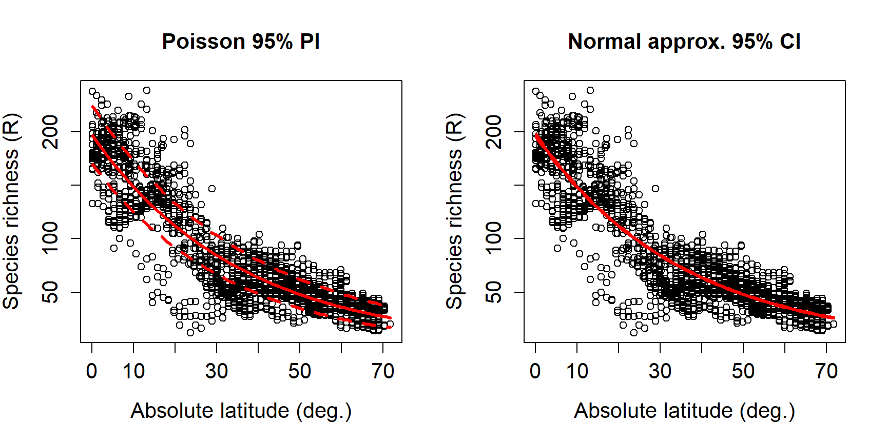
A gamma distribution with shape a and scale s is basically a continuous version of a negative binomial distribution with size n and probability p according to the following relationships:
\[a=\frac{\mu^2}{\sigma^2}\] \[s=\frac{\mu}{a}\]
Where \(\mu\) and \(\sigma^2\) can be calculated from the parameters of the negative binomial distribution as:
\[\mu=\frac{n\left(1-p\right)}{p},\ \sigma^2=\frac{n\left(1-p\right)}{p^2}\]
The relationships above can be used to convert between gamma distributions and negative binomial distributions with other parameterizations. For example, ecologists often use an alternate version of the negative binomial with mean \(\mu\) and \(\sigma^{2}=\mu + (\mu^{2}/k)\).
Like the negative binomial, biologists can take advantage of the numerical properties of the gamma to model phenomena for which the variance is much greater than the mean. The log-normal distribution is another option for right-skewed data. Neither the log-normal nor the gamma distribution can take the value 0, so users of the gamma distribution may need to adjust their data so that 0s do not occur. Of the GLMs described in this guide, gamma models are probably the most under-utilized by biologists.
5.8.1 Example with simulated data
As always, we will start with analysis of simulated data. Notice that we are using log link function. The canonical link for the gamma distribution is the reciprocal function (\(f(x)=1/x\)). However, the reciprocal function is more applicable for the “waiting time” interpretation of the distribution. For the “right-skewed non-negative distribution” interpretation, the log or identity links can be appropriate. However, the log-link cannot be used if your data contain 0s.
set.seed(123)
n <- 30
x <- round(runif(n, 0, 4), 1)
# coefficients
beta0 <- 0.9
beta1 <- 1.2
# linear predictor
eta <- beta0 + beta1 * x
# inverse link
y <- exp(eta)
# gamma parameter
shape <- 4
# draw y values (stochastic part)
y <- rgamma(n, rate=shape/y, shape=shape)
# assemble dataset
dat <- data.frame(x=x, y=y)
# take a look at the data:
head(dat)## x y
## 1 1.2 19.831466
## 2 3.2 128.548423
## 3 1.6 3.303748
## 4 3.5 89.653108
## 5 3.8 105.050148
## 6 0.2 2.268062plot(x,y)
The data look like they might be log-linear—i.e., linear on a logarithmic scale. We can check that with another scatterplot:
plot(x, log(y))When y is log-transformed, things look linear. We will try a Gaussian GLM with log link function. Because the variance looks like it increases at larger X values, we will also try a gamma GLM. One characteristic of the gamma distribution is that the variance is proportional to the mean squared, which might be the case here.
mod1 <- glm(y~x, data=dat, family=gaussian(link="log"))
mod2 <- glm(y~x, data=dat, family=Gamma(link="log"))
summary(mod1)##
## Call:
## glm(formula = y ~ x, family = gaussian(link = "log"), data = dat)
##
## Deviance Residuals:
## Min 1Q Median 3Q Max
## -52.584 -18.722 -8.663 -4.337 143.577
##
## Coefficients:
## Estimate Std. Error t value Pr(>|t|)
## (Intercept) 1.8969 0.6141 3.089 0.0045 **
## x 0.8122 0.1725 4.708 6.16e-05 ***
## ---
## Signif. codes: 0 '***' 0.001 '**' 0.01 '*' 0.05 '.' 0.1 ' ' 1
##
## (Dispersion parameter for gaussian family taken to be 1650.88)
##
## Null deviance: 128445 on 29 degrees of freedom
## Residual deviance: 46225 on 28 degrees of freedom
## AIC: 311.34
##
## Number of Fisher Scoring iterations: 6summary(mod2)##
## Call:
## glm(formula = y ~ x, family = Gamma(link = "log"), data = dat)
##
## Deviance Residuals:
## Min 1Q Median 3Q Max
## -1.23251 -0.35454 -0.05758 0.13402 0.76848
##
## Coefficients:
## Estimate Std. Error t value Pr(>|t|)
## (Intercept) 0.99844 0.17787 5.613 5.21e-06 ***
## x 1.08949 0.06932 15.717 2.02e-15 ***
## ---
## Signif. codes: 0 '***' 0.001 '**' 0.01 '*' 0.05 '.' 0.1 ' ' 1
##
## (Dispersion parameter for Gamma family taken to be 0.1887889)
##
## Null deviance: 41.3449 on 29 degrees of freedom
## Residual deviance: 5.4667 on 28 degrees of freedom
## AIC: 245.54
##
## Number of Fisher Scoring iterations: 4Notice that the parameter estimates from the gamma GLM were much closer to “reality” than those of the Gaussian GLM. Which model performed better? The pseudo-R2 suggests the gamma:
1-mod1$deviance/mod1$null.deviance## [1] 0.64012171-mod2$deviance/mod2$null.deviance## [1] 0.8677773The best test is to plot the predicted values against the actual values and compare the models.
# values for prediction
use.n <- 50
px <- seq(min(x), max(x), length=use.n)
# calculate predictions and CI
pred1 <- predict(mod1, newdata=data.frame(x=px),
type="link", se.fit=TRUE)
mn1 <- pred1$fit
lo1 <- qnorm(0.025, mn1, pred1$se.fit)
up1 <- qnorm(0.975, mn1, pred1$se.fit)
# inverse link function
mn1 <- mod1$family$linkinv(mn1)
lo1 <- mod1$family$linkinv(lo1)
up1 <- mod1$family$linkinv(up1)
# calculate predictions and CI for gamma model
pred2 <- predict(mod2, newdata=data.frame(x=px),
type="link", se.fit=TRUE)
mn2 <- pred1$fit
lo2 <- qnorm(0.025, mn2, pred2$se.fit)
up2 <- qnorm(0.975, mn2, pred2$se.fit)
# inverse link function
mn2 <- mod1$family$linkinv(mn2)
lo2 <- mod1$family$linkinv(lo2)
up2 <- mod1$family$linkinv(up2)
# make plot
par(mfrow=c(1,2))
plot(x,y, main="Normal GLM")
polygon(x=c(px, rev(px)), y=c(lo1, rev(up1)),
border=NA, col="grey80")
points(px, mn1, type="l", lwd=3)
points(x, y)
plot(x,y, main="Gamma GLM")
polygon(x=c(px, rev(px)), y=c(lo2, rev(up2)),
border=NA, col="grey80")
points(px, mn2, type="l", lwd=3)
points(x, y)
The gamma GLM captured the heteroscedasticity in the data (non-constant variance) better than the Gaussian (normal) GLM. We should conclude that the gamma GLM better represents the data. If you have a heteroscedastic relationship that isn’t well-modeled by other GLMs, the gamma GLM might be worth a try.
5.9 Beyond GLM: Overview of GAM and GEE
In other sections we have explored the power and utility of GLMs for biological data. This page describes two methods that can be thought of as extensions of GLM: generalized additive models (GAM) and generalized estimating equations (GEE). GAM will get a more thorough treatment in their own section in the future.
5.9.1 Generalized additive models (GAM)
Generalized additive models (GAM) go one step further than GLMs by relaxing an additional assumption: the assumption of a linear relationship between the response variable on the link scale and the predictors. GAMs fit a curve to data that can vary in complexity. These curves are commonly called smoothers. However, the parameters of the curve are not tested individually in the way that the parameters in something like a quadratic model or non-linear model would be. Instead, the curve itself is treated as a regression coefficient. Compare the equation for the linear predictor of a GLM with k predictors
\[g\left(E\left(Y\right)\right)=\beta_0+\beta_1X_1+\beta_1X_1+\ldots+\beta_kX_k\]
to the equation of the predictor of a GAM with k predictors:
\[g\left(E\left(Y\right)\right)=\beta_0+f_1\left(X_1\right)+f_2\left(X_2\right)+\ldots+f_k\left(X_k\right)\]
Instead of each predictor being multiplied by a coefficient, a smoothing function of each predictor is estimated.
When should you use GAM? The most common application is situations where the response is not linearly related to the predictors, or if the response curve takes on a complicated shape. As you might suspect, the smoothers fitted in a GAM can be vulnerable to overfitting just as can be polynomial models or multiple regression models. Researchers usually control for this overfitting of the smoothers by limiting the complexity of the curves; this parameter is usually called the number of “knots”.
GAMs will get a more thorough treatment later in the context of nonlinear models. Some good references to get you started are Wood (2017) and Zuur et al. (2007). The best-known R package for fitting GAMs is mgcv (CRAN page, accessed 2021-09-17).
5.9.2 Generalized estimating equations (GEE)
All GLMs assume that observations are independent of each other. However, this cannot always be assumed in biological data. Observations may by correlated with each other across time and space, or within treatment or blocking groups. Such violations of the independence assumption can often be handled well by mixed models, which are described in their own pages elsewhere on this site. However, the technique of generalized estimating equations (GEE) is another way to analyze data with inherent correlations between observations. Some references to start with if you are interested are Liang and Zeger (1986) and Højsgaard et al. (2006). Two important packages used with GEE are gee (Carey 2019) and geepack (Højsgaard et al. 2006).